Informe sumativo grupal · Unidad de Aprendizaje N°3 · FGIE03
Fase de desarrollo, prototipado y testeo del Ciclo de Innovación INACAP aplicada al caso de Josselyn Toledo, kinesióloga independiente
con atención en cuatro canales. Del storyboard al prototipo navegable Copiloto Kine: dos ciclos de testeo internos, la
validación con la clienta y Sercotec, la iteración a la versión 3 y su verificación frente al estado del arte, con trazabilidad a los criterios 3.1.1 a 3.1.5.
3.1.1.1 SQA3.1.2.1 Storyboard3.1.2.2 Mock-up3.1.2.3 Ficha de testeo3.1.2.4 Matriz CDM3.1.3.1 Metáforas iteradas3.1.3.2 Storyboard iterado3.1.3.3 Mock-up iterado3.1.3.4 Testeo de la iteración3.1.4.1 PESTAL profundizada
Anexo APlantillas oficiales del toolkit UA3 completas (11 plantillas, ciclos 1 a 4)57
Marco
Introducción
Prototipar es hacer tangible la promesa para poder probarla.
La Unidad 3 corresponde a la fase de desarrollo, prototipado y testeo del Ciclo de Innovación INACAP. Su aprendizaje esperado
es elaborar el prototipo de la propuesta de valor, testearlo con usuarios en más de un ciclo, ajustarlo según los resultados y verificar su pertinencia frente al estado del arte y las tendencias.
Caso y punto de partida
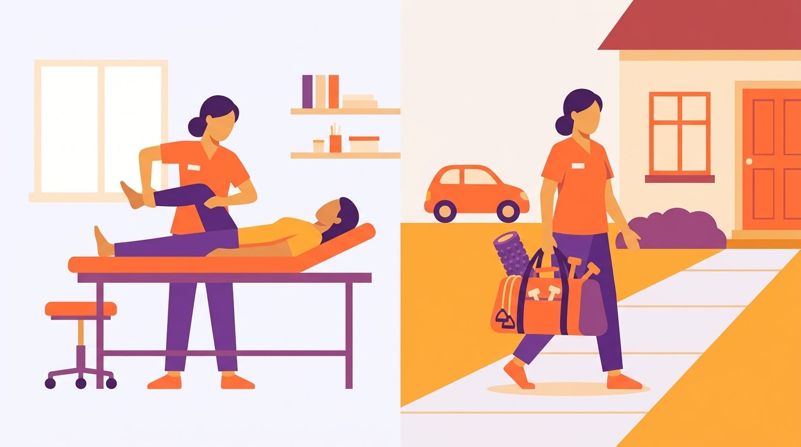
UsuariaJosselyn Toledo — kinesióloga y psicomotricista acuática: Centro Médico InMotion (factura mensual), domicilios en San Fernando y Agua Buena, piscina temperada y gimnasio.
Problema (UA1)No sabe cuánto gana de verdad; cuadra ingresos y gastos en Excel de noche (~1 h diaria).
Solución (UA2)Copiloto Kine: convierte cada atención en ganancia real y anticipa los meses bajos.
Desafío
¿Cómo podríamos aumentar la visibilidad financiera de kinesiólogas independientes con atención mixta, conectando su agenda con sus ingresos y costos, para reducir a la mitad el tiempo de registro manual (de ~1 h a menos de 30 min diarios) en Rancagua durante 2027?
Propuesta de valor que llegamos a probar (EV2)
Copiloto Kine es el copiloto financiero de la kinesióloga independiente: se conecta a la agenda que ya usa y convierte cada atención en ganancia real —descontando traslado, materiales, comisión e impuestos— para que sepa cuánto gana, anticipe los meses bajos y deje de cuadrar Excel de noche.
Nota de transparencia. Los ciclos 1 y 2 los ejecutó el equipo como usuarios internos —alternativa que el toolkit permite— con scripts
reproducibles (unidad-3/ciclo1 y ciclo2). El ciclo 3 es la validación externa con la clienta, Sercotec y docentes (reunión del 12/11), documentada con una
transcripción con minuto. El ciclo 4, con Josselyn y Catalina usando la v3, está planificado y sus resultados se informan como pendientes: no atribuimos opiniones a personas que aún no han participado.
Marco
Prototipos navegables: vista profesional y vista cliente
Dos vistas, un mismo sistema.
Los dos prototipos están publicados y se abren desde cualquier celular, sin instalar nada. Son la evidencia funcional del informe: cada pantalla citada en las secciones siguientes se puede recorrer en estos enlaces.
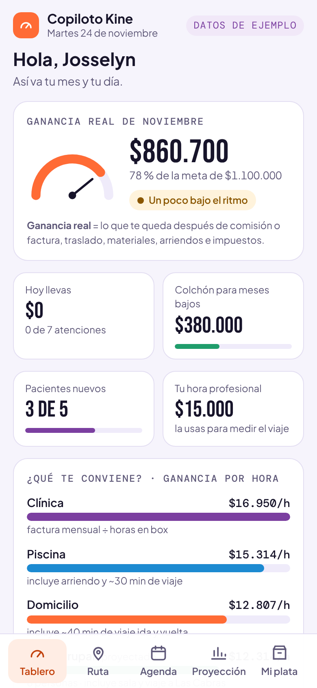
Vista profesional · Josselyn
La app de la kinesióloga (prototipo v3): ganancia real y por hora de sus cinco canales, ruta en San Fernando con el costo del tiempo de viaje, agenda desde AgendaPro y la clínica, clase grupal y resumen exportable.
Portada de ambos: copiloto-kine.vercel.app/. Las versiones v1 y v2 y el código fuente están en el repositorio del proyecto (unidad-3/prototipo). Los prototipos no envían mensajes ni guardan datos fuera del dispositivo.
Marco
Ruta metodológica
Dos ciclos con focos distintos: primero usarla, después confiar en ella.
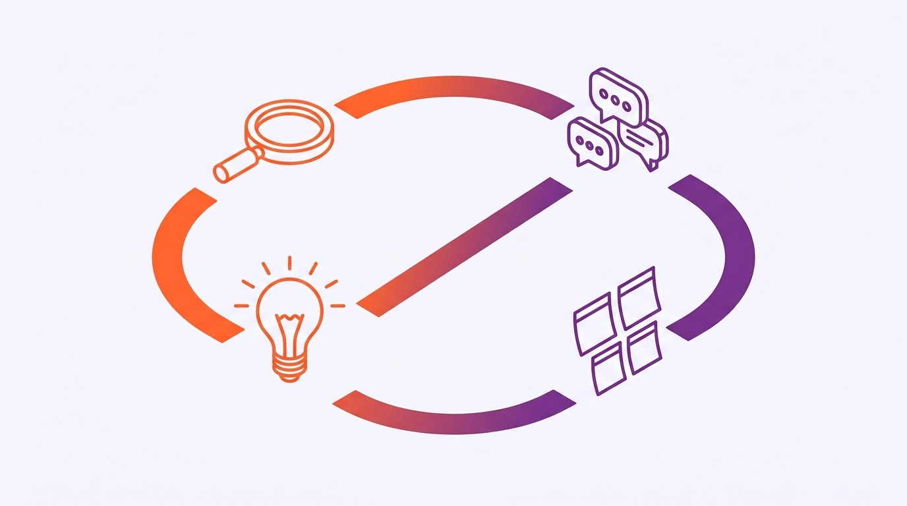
El trabajo siguió el calendario S11–S15. Cada ciclo de testeo tuvo un foco distinto: primero que se pueda usar y se vea bien; después, que calcule exacto; luego, que la clienta reconozca su forma real de trabajar; y por último, que la usuaria lo use en su celular.
S12–S13 · Iterar v2Metáfora, storyboard y mock-up v2
›
S13 · Ciclo 2Técnico: 11 pruebas
›
S13 · Ciclo 3Clienta, Sercotec y docentes (12/11)
›
S14 · Iterar v312 cambios del ciclo 3
›
S15 · Ciclo 4Josselyn y Catalina con la v3
Ciclo 1 · funcional y estético
¿Puede una kinesióloga hacer su día sin ayuda? ¿Se lee, se toca y se entiende? Tareas, auditoría WCAG 2.1 AA, objetivos táctiles, tipografía y heurísticas de Nielsen.
Ciclo 2 · técnico
¿Resuelve con exactitud sus necesidades puntuales? Cálculos, cierre del día, persistencia, costos editables, exportación sin datos clínicos, rendimiento y brechas.
Ciclo 3 · con la clienta
¿Calza con su rutina real? Reunión del 12/11 con Josselyn, Sercotec y docentes: 12 hallazgos que originan la v3.
Ciclo 4 · usuarias (planificado)
¿Lo usa en su celular y le ayuda a decidir? Josselyn y Catalina con la v3: tareas N1–N10, SUS y precio.
Trazabilidad con la rúbrica ES03
Criterio
Pts.
Indicador
Dónde se evidencia
3.1.1
15
Aplica la fase de desarrollo y prototipado del Ciclo de Innovación INACAP
3.1.1.1 · 3.1.2.1 · 3.1.2.2
3.1.2
20
Elabora un prototipo funcional y lo valida con usuarios en más de un ciclo, con enfoque sostenible
Ciclos 1 y 2 · ciclo 3 con la clienta · ciclo 4 · sostenibilidad
3.1.3
15
Ajusta el prototipo a partir de los resultados del testeo, fundamentando los cambios
Dos iteraciones: v2 y v3 · 3.1.2.4 · 3.1.3.1–3.1.3.4
3.1.4
20
Analiza el estado del arte y las tendencias en relación con el desafío
3.1.4.1 · estado del arte · tendencias
3.1.5
30
Pertinencia de la propuesta de valor
Propuesta iterada · pertinencia
Evaluación diagnóstica
3.1.1.1Tabla SQA
Sabíamos prototipar; teníamos que aprender a medir.
Instrumento
3.1.1.1 Tabla SQA
Momento
Evaluación diagnóstica · S11
Participantes
Los cuatro integrantes
Uso
Orientar la planificación del testeo
S · Lo que sabemos
Prototipar es materializar la idea para probarla antes de invertir (UA3 de Innovación y Emprendimiento II).
Un storyboard muestra la experiencia en el tiempo; un mock-up la materializa en forma.
Nuestra propuesta de valor, atributos y requerimientos ya están definidos (EV2).
Como estudiantes de Diseño Digital, prototipamos en Figma y en HTML.
Q · Lo que queremos saber
¿Cómo testear una herramienta financiera sin datos reales de la usuaria?
¿Qué indicadores muestran que el prototipo funciona y no solo que “gusta”?
¿Cómo pasar de un testeo funcional a uno técnico en la iteración?
¿Qué tan distinta es la propuesta frente a lo que ya existe en 2026?
A · Lo que aprendimos
Un recorrido de tareas con indicadores medibles (éxito, toques, contraste) da evidencia más sólida que la opinión.
Testear al interior del equipo es válido para depurar; la validación final necesita a la usuaria.
Cada ciclo debe tener un foco distinto: primero uso y estética; luego exactitud, privacidad y brechas técnicas.
La ruta del día, que no estaba en el foco original, aporta tanto valor como el tablero financiero.
Lectura
La tabla mostró que el equipo dominaba la representación visual —es su disciplina—, pero no sabía cómo testear una herramienta financiera
sin datos reales ni con qué indicadores. Esa brecha orientó todo lo que sigue: medir tareas, accesibilidad y exactitud en vez de preguntar solo si el prototipo “gusta”.
Prototipado · versión 1
3.1.2.1Storyboard con propuesta de valor
Un día de Josselyn, de las 11:40 p. m. al domingo.
Instrumento
3.1.2.1 Storyboard con propuesta de valor
Insumo
Propuesta de valor y atributos EV2
Formato
Escenas con capturas del prototipo v1
Plantilla
Anexo A
Copiloto Kine es el copiloto financiero de la kinesióloga independiente: se conecta a la agenda que ya usa y convierte cada atención en ganancia real —descontando traslado, materiales, comisión e impuestos— para que sepa cuánto gana, anticipe los meses bajos y deje de cuadrar Excel de noche.
01
23:10 · el Excel de noche
Después de atender, Josselyn cuadra ingresos y gastos. Le toma cerca de una hora y no sabe si el mes va bien.
Componente del productoSituación actual: registro manual, sin proyección (UA1).
Componente de la propuesta de valorNecesidad: saber cuánto gana sin trabajo nocturno.
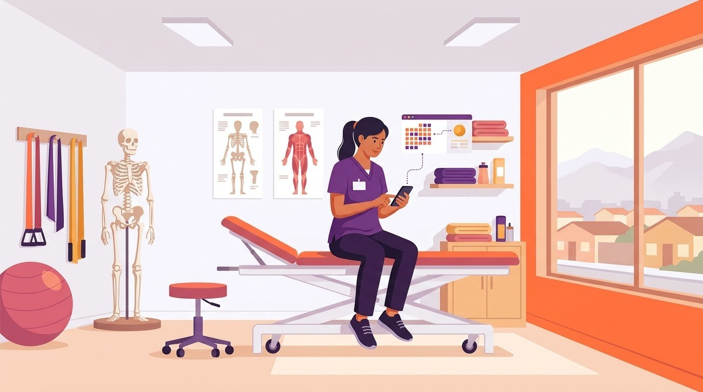
02
9:45 · entre pacientes, en la clínica
Abre el tablero: ganancia real del mes, porcentaje de la meta y semáforo, sin tocar nada.
Componente del productoTablero con ganancia real y semáforo.
Componente de la propuesta de valorAtributo “Legible de un vistazo”.
03
8:00 · la agenda llega sola
Cada cita del día aparece como ingreso proyectado, etiquetada como clínica o domicilio.
Componente del productoAgenda conectada (simulada en v1).
Componente de la propuesta de valorAtributo “Automático”: no se vuelve a digitar.
04
12:30 · “atención realizada”
Al despedirse de don Luis confirma la atención con un toque y ve su ganancia neta.
Componente del productoRegistro de un toque con desglose.
Componente de la propuesta de valorGanancia real: traslado, materiales y retención ya descontados.
05
13:10 · ruta y “voy en camino”
La ruta ordena los domicilios y con un toque avisa al siguiente paciente que va llegando.
Componente del productoRuta del día y aviso al paciente.
Componente de la propuesta de valorAtributos “Sostenible” y “Cercano”.
06
Domingo · lo que viene
Ve que febrero viene bajo, pero todavía arma a mano lo que le entrega a la contadora.
Componente del productoProyección a 3 meses.
Componente de la propuesta de valor“Anticipador”; queda abierto el cierre con la contadora.
Prototipado · versión 1
3.1.2.2Mock-up con propuesta de valor
Un enlace en el celular: nada que instalar.
El mock-up se construyó como prototipo navegable en HTML para celular (390 px): se abre desde un enlace, sin instalar nada. Paleta clara del
proyecto con acentos naranjos; la clínica se identifica en morado y el domicilio en naranjo.
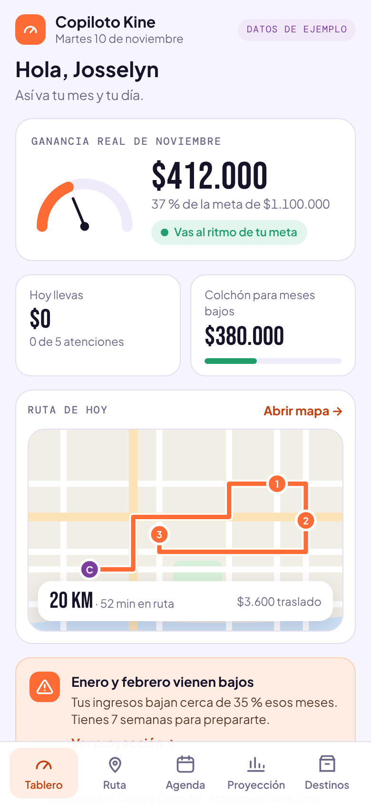
Tablero
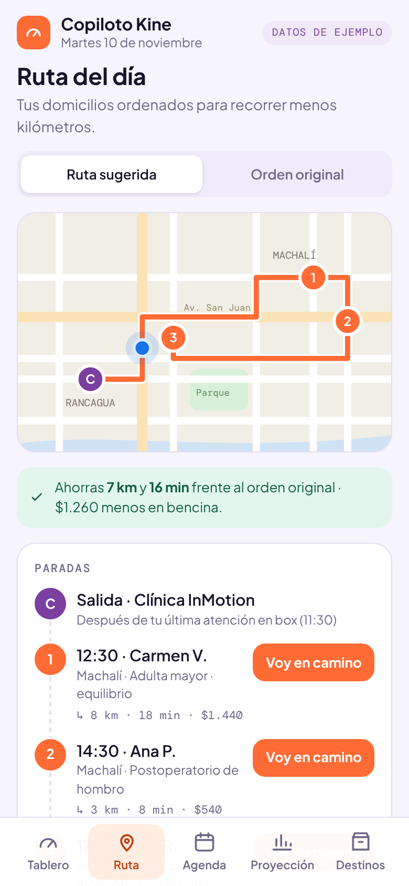
Ruta
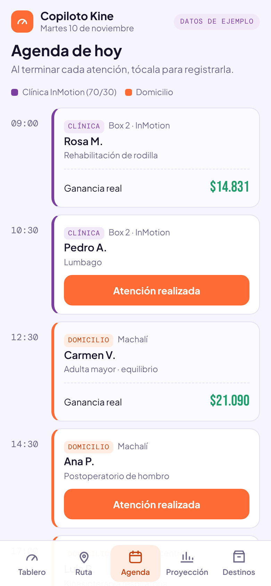
Agenda
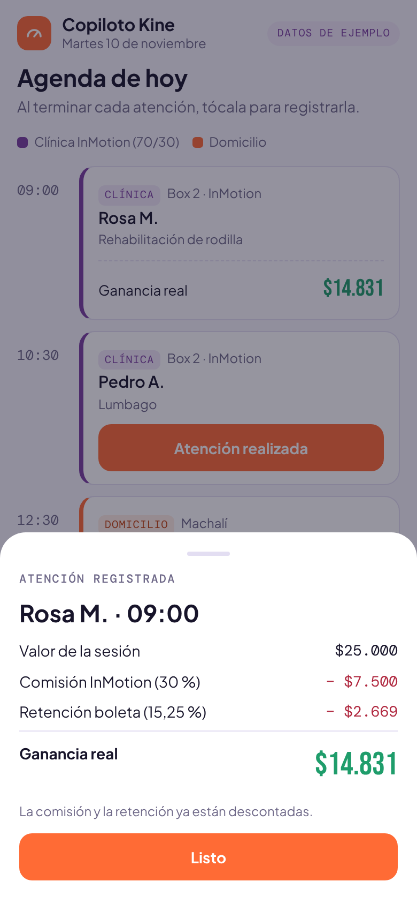
Ganancia
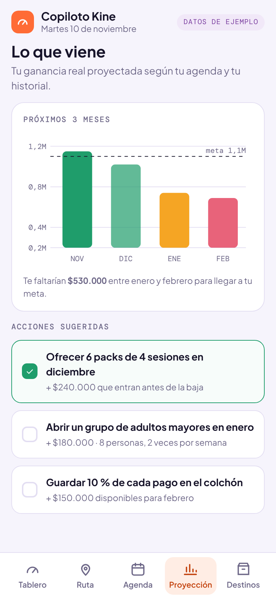
Proyección
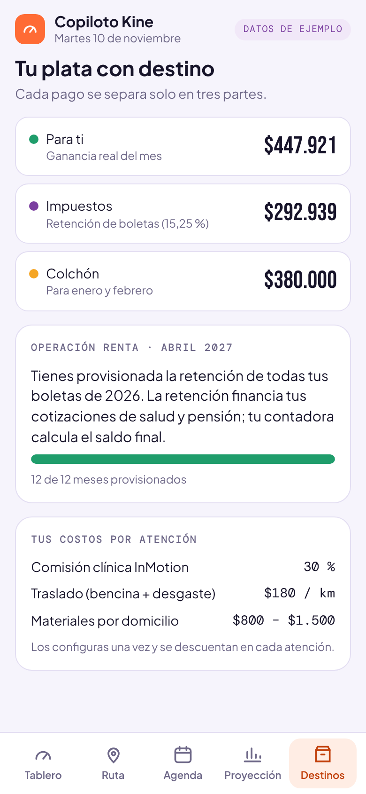
Destinos
Pantalla
Qué materializa
Atributo de la propuesta de valor
Tablero
Ganancia real del mes, meta, semáforo, colchón, ruta en miniatura y alerta de meses bajos.
Legible de un vistazo · Anticipador
Ruta
Mapa con paradas numeradas, km, minutos, costo y botón “Voy en camino”.
Sostenible · Cercano
Agenda
Citas de clínica y domicilio; un toque registra la atención.
Automático
Ganancia
Desglose: valor, comisión, traslado, materiales y retención.
Legible · Automático
Proyección
Ganancia proyectada a 3 meses y acciones que cierran la brecha.
Anticipador
Destinos
Separación en ganancia, impuestos y colchón; costos configurados.
Sostenible
Archivo: unidad-3/prototipo/copiloto-kine-v1.html. La versión iterada (v2) se prueba en copiloto-kine.vercel.app/profesional/. Las pantallas usan datos de ejemplo de un día tipo de Josselyn (2 atenciones en clínica y 3 a domicilio).
La voz de las usuarias · lo que el prototipo debe resolver
“Para poder organizar el Excel sobre los ingresos y egresos que estoy teniendo me toma una hora actualmente diario.”
— Catalina, kinesióloga · entrevista a experta UA1
La meta del desafío: menos de 30 minutos. El prototipo v2 cierra un día de cinco atenciones en 11 toques.
Testeo del prototipoCiclos 1 y 2
Testeo · ciclo 1
3.1.2.3Ficha de planificación del testeo
El ciclo 1 pregunta: ¿se puede usar y se ve bien?
Instrumento
3.1.2.3 Ficha de planificación del testeo
Foco
Funcional y estético
Prototipo
v1 en celular (390 px)
Plantilla
Anexo A
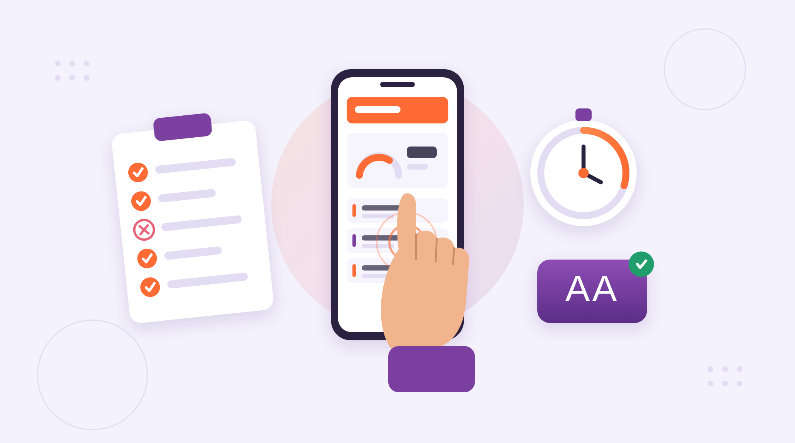
Evaluar si el prototipo v1 permite a una kinesióloga independiente completar sus tareas diarias de registro, ruta y control financiero sin ayuda, y si su estética es clara, accesible y coherente con la metáfora.
Objetivo específico
Participantes
Prototipo
Actividades
Roles
Indicador
Pregunta
Procesamiento
Lugar · tiempo
Verificar que las tareas principales se completan sin ayuda
Equipo en rol de usuaria (perfil de Josselyn, UA2)
Prototipo v1 en celular (390 px)
Recorrido guiado de 11 tareas
Mod.: Claudia · Ejec.: Néstor · Reg.: Francisco
≥ 90 % de tareas completadas; ≤ 3 toques por tarea
¿Se pudo completar sin ayuda? ¿Cuántos toques?
Planilla de tareas (éxito y toques) automatizada
Sala INACAP 30 min
Evaluar legibilidad y accesibilidad
Auditoría del equipo
Prototipo v1, 5 vistas
Auditoría WCAG 2.1 AA (axe-core) y medición de botones y letra
Revisar coherencia estética y de uso con la metáfora
3 integrantes
Prototipo v1
Revisión heurística (10 heurísticas de Nielsen)
Todo el equipo
Sin problemas de severidad ≥ 3
¿Transmite “tablero y copiloto” sin recargar?
Severidad 0–4 y matriz CDM
Sala INACAP 20 min
Roles. Moderación: Claudia Cifuentes · Ejecución de tareas: Néstor Rivera · Registro: Francisco Ahumada · Consolidación y auditoría técnica: Benjamín Vera Yáñez.
Herramientas de medición
Recorrido de 11 tareas automatizado con Playwright: éxito y número de toques por tarea (ciclo1/evaluar_prototipo.js).
Auditoría WCAG 2.1 A/AA con axe-core 4.10 en las cinco vistas.
Objetivos táctiles menores a 44 px y tamaños de letra visibles por vista.
Revisión heurística (10 heurísticas de Nielsen) con severidad 0–4, consensuada por el equipo.
Testeo · ciclo 1
Resultados del ciclo 1
Funciona en lo central y falla en lo que permite corregir.
7/11
tareas completadas sin ayuda (meta ≥ 90 %)
11
errores de contraste WCAG AA
7
botones o enlaces bajo 44 px
10–11
px: letra mínima en etiquetas
#
Tarea
Éxito
Toques
Evidencia
T1
Saber cuánto ganó en el mes y si va bien
✔
0
Visible sin tocar nada: $412.000 · Vas al ritmo de tu meta
T2
Registrar una atención como realizada
✔
2
Hoja de ganancia visible: sí
T3
Entender de qué se compone la ganancia de una atención
✔
2
Valor de la sesión $28.000 · Traslado (8 km) − $1.440 · Materiales − $1.200 · …
T4
Corregir una atención marcada por error
✖
—
No existe opción para deshacer o editar la atención
T5
Ver la ruta del día y avisar al primer paciente
✔
2
Feedback: Aviso enviado a Carmen V.: llegas en ~15 min
T6
Comparar la ruta sugerida con el orden original
✔
2
Ahorro visible en orden original: no
T7
Saber cuánto falta para cubrir enero y febrero y agregar una acción
✔
2
Te faltarían $770.000 entre enero y febrero para llegar a tu meta. → Te faltar…
T8
Saber cuánto tiene separado para impuestos
✔
1
Impuestos: $286.000
T9
Cambiar el costo por km o la comisión de la clínica
✖
—
Los costos se muestran pero no se pueden editar
T10
Marcar que un paciente no asistió
✖
—
No existe estado de inasistencia o cancelación
T11
Preparar la información del mes para la contadora
✖
—
No existe exportación para la contadora
Revisión heurística
Heurística
Hallazgo
Sev.
H1 Visibilidad del estado
Hoja de confirmación y avisos después de cada acción.
0
H2 Relación con el mundo real
“Destinos” no se entiende; “ganancia real” no está definida.
2
H3 Control y libertad
No se puede deshacer una atención marcada por error.
3
H4 Consistencia
Dos naranjas distintos en botones y enlaces.
1
H5 Prevención de errores
Sin opción “no asistió”: una inasistencia sumaría un ingreso falso.
3
H6 Reconocer antes que recordar
El desglose muestra todos los descuentos al registrar.
0
H7 Flexibilidad
Los costos (km, comisión, retención) no se pueden ajustar.
3
H8 Estética minimalista
Tablero equilibrado; la tarjeta del mapa en miniatura tapaba parte del recorrido.
1
H9 Recuperarse de errores
Sin camino para corregir una cifra mal registrada.
2
H10 Ayuda
La proyección no explica de dónde salen los números.
1
Lectura. Lo central funciona: la ganancia del mes se lee sin tocar nada y una atención se registra en dos toques. Las cuatro tareas fallidas comparten causa: no hay forma de corregir (deshacer, inasistencia, costos, exportación). En lo estético, el tablero compacto funciona; el naranjo del proyecto no alcanza contraste con texto blanco (2,84:1).
Testeo · ciclo 1
3.1.2.4Matriz CDM del ciclo 1
Todo problema de severidad 2 o más entra a la iteración.
Instrumento
3.1.2.4 Matriz CDM con propuesta de valor
Fuente
Tareas, auditoría y heurísticas del ciclo 1
Regla
Severidad ≥ 2 → iteración
Plantilla
Anexo A
Cualidades
Debilidades
Mejoras
Producto / servicio
T1 sin tocar nada: la ganancia del mes es visible al abrir.
Registrar una atención: 2 toques con confirmación.
Desglose completo de la ganancia por atención.
Ruta y aviso al paciente con respuesta inmediata.
Proyección que reacciona al agregar acciones.
4 de 11 tareas no se pueden completar: deshacer, inasistencia, editar costos y exportar.
11 textos con contraste insuficiente (blanco sobre naranja: 2,84:1).
7 botones o enlaces bajo 44 px (enlaces de 19 px).
Textos de 10 y 11 px en etiquetas, leyendas y navegación.
En “orden original” desaparece el dato de ahorro.
Agregar “Deshacer” y “No asistió”.
Costos editables y exportación para la contadora.
Naranja accesible #C2410C (5,2:1) para botones.
Botones de 44 px y letra mínima de 12 px.
Mostrar la diferencia de km en ambos modos y valores en el gráfico.
Propuesta de valor
“Legible de un vistazo”: meta en % y semáforo sin leer números.
“Automático”: la cita se convierte en ingreso sin digitar.
“Anticipador”: la alerta de enero y febrero aparece en el inicio.
“Automático” se rompe ante un error: no hay forma de corregir.
“Ganancia real”, el centro de la propuesta, no se explica.
“Cercano”: el aviso no muestra qué se le envía al paciente.
Definir “ganancia real” bajo el indicador.
Mostrar el texto del mensaje “voy en camino”.
Llevar la ruta al centro de la metáfora: es lo más “copiloto” de la app.
Análisis y conclusiones
La promesa “automático” se rompe ante el primer error: sin deshacer ni inasistencia, una equivocación se convierte en un ingreso falso. En la propuesta de valor, “ganancia real” —su centro— no está definida en pantalla. Y la ruta del día, que no era el foco, resultó lo más “copiloto” de la app: esa observación cambia la metáfora en la iteración.
De la prueba a la iteración
7 DE 11 → 11 DE 11.
Los hallazgos del ciclo 1 se convirtieron en doce cambios concretos. La versión 2 completa todas las tareas, sin errores de accesibilidad.
12
Cambios en v2
Cada uno trazado a un hallazgo medido y a un requerimiento de la EV2.
11 → 0
Errores de contraste
Naranjo accesible #C2410C (5,2:1) en botones y verde oscuro en estados.
12 px
Letra mínima
Y todos los botones de 44 px o más: se usa con una mano, entre domicilios.
Iteración del prototipo3.1.3.1 – 3.1.3.3
Iteración · versión 2
De la versión actual a la actualizada
Primero visual y funcional; después técnica.
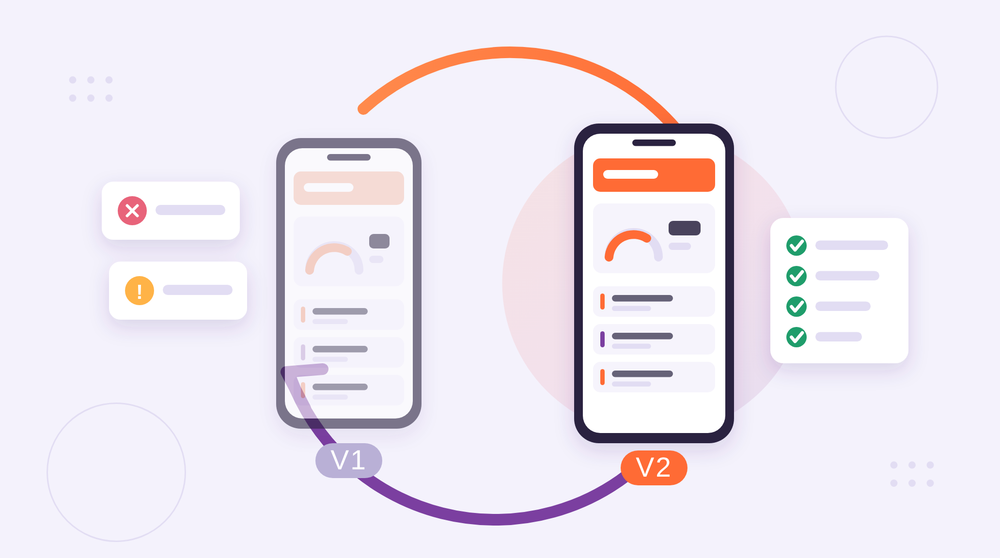
Los instrumentos del toolkit no se llenan una sola vez: cada uno se presenta en su versión actual —más visual y funcional, la que llevamos al ciclo 1— y en su versión actualizada según los hallazgos clave del testeo, más técnica y enfocada en resolver las necesidades puntuales de la kinesióloga.
Instrumento
Versión actual · visual y funcional
Versión actualizada · técnica
Hallazgo que la motiva
3.1.2.1 → 3.1.3.2 Storyboard
Versión actual Un día de Josselyn con la promesa de la EV2: tablero, registro, ruta y proyección.
Versión actualizada Mismo día con lo corregido y lo técnico: ruta por sector con bencina, corrección, cierre a las 20:40 y proyección con acciones.
Ruta como vista más valorada; “automático” sin corrección
3.1.2.2 → 3.1.3.3 Mock-up
Versión actual Prototipo v1: 5 vistas, foco en que se vea y se use bien.
Versión actualizada Prototipo v2: 12 cambios (accesibilidad, deshacer, inasistencia, costos editables, exportación) + vista paciente.
7/11 tareas; 11 errores de contraste
3.1.2.3 → 3.1.3.4 Ficha de testeo
Versión actual Ciclo 1 visual y funcional: tareas, WCAG AA, heurísticas.
Versión actualizada Ciclo 2 técnico: exactitud de cálculos, persistencia, privacidad, rendimiento y cobertura R1–R13.
Lo funcional quedó resuelto en v2
3.1.2.4 (×2) Matriz CDM
Versión actual Ciclo 1: uso, estética y promesa de valor.
Versión actualizada Ciclo 2: brechas técnicas e integraciones para el MVP.
Cambia el tipo de debilidad: de uso a integración
2.1.4.3 → 3.1.3.1 Metáfora y atributos
Versión actual Tablero y copiloto de rally; “Legible de un vistazo”, “Automático”.
Versión actualizada Copiloto que lee la ruta y lleva las cuentas; “Claro”, “Automático y corregible”.
Ruta más valorada; accesibilidad medida
2.1.4.4 → 3.1.5 Propuesta de valor
Versión actual “Se conecta a la agenda que ya usa… deja de cuadrar Excel de noche”.
Versión actualizada “Ordena su ruta… entrega sus números a la contadora sin pasar nada a Excel”.
Promesa ajustada a lo verificado (P6, B1)
1.1.3.1 → 3.1.4.1 Matriz PESTAL
Versión actual Contexto general de la UA1.
Versión actualizada Cada factor con evidencia del prototipo y oportunidades técnicas (APIs públicas de combustible y mapas).
Testeo técnico y brechas B1–B7
Las páginas siguientes muestran cada par. Las plantillas oficiales de ambas versiones están en el Anexo A.
Iteración · versión 2
3.1.3.1Panel de metáforas y atributos iterado
La metáfora pasa del tablero al copiloto.
Instrumento
3.1.3.1 Panel de metáforas y atributos iterado
Fuente
Matriz CDM del ciclo 1
Cambio
Metáfora y 2 atributos
Antes · EV2
“Copiloto Kine es como el tablero y el copiloto de un auto de rally.”
Después · iteración
“Copiloto Kine es como el copiloto de un rally: lee la ruta, canta los tiempos y lleva las cuentas mientras ella maneja.”
Fundamento. En el ciclo 1 la ruta del día fue la vista con más valor percibido y la que mejor encarna la idea de “copiloto”, mientras el tablero funcionó mejor en tamaño reducido. La metáfora deja de centrarse en el instrumento (el tablero) y pasa a centrarse en el acompañante que lee la ruta y lleva la libreta.
Anticipador
…en el sentido de que canta la curva antes de llegar: alerta enero y febrero con 7 semanas y propone acciones con su monto.
Ec
Ajuste según el testeoSe mantiene. Ciclo 1: la alerta se entiende; faltaban valores en el gráfico.
Claro
…en el sentido de que se lee al sol y de un vistazo: letra mínima de 12 px, contraste AA y “ganancia real” explicada en una línea.
So
Ajuste según el testeoReemplaza “Legible de un vistazo” e incorpora la accesibilidad medida.
Automático y corregible
…en el sentido de que la cita se vuelve ingreso con un toque y, si hubo un error o una inasistencia, se corrige con otro.
SoEc
Ajuste según el testeoSe amplía. Ciclo 1: “automático” sin corrección generaba registros falsos.
Sostenible
…en el sentido de que rinde más con menos: 7 km menos por día, colchón para los meses bajos y datos de salud fuera del sistema.
EcSoAm
Ajuste según el testeoSe refuerza con la ruta y la privacidad por diseño.
Iteración · versión 2
3.1.3.2Storyboard iterado
El mismo día, con lo que aprendimos.
Instrumento
3.1.3.2 Storyboard iterado
Insumo
Matriz CDM del ciclo 1
Formato
Escenas con capturas del prototipo v2
Plantilla
Anexo A
Copiloto Kine es el copiloto de la kinesióloga independiente: ordena su ruta de domicilios y convierte cada atención en ganancia real —con comisión, traslado, materiales e impuestos ya descontados— para que sepa cuánto gana, anticipe los meses bajos y entregue sus números a la contadora sin pasar nada a Excel.
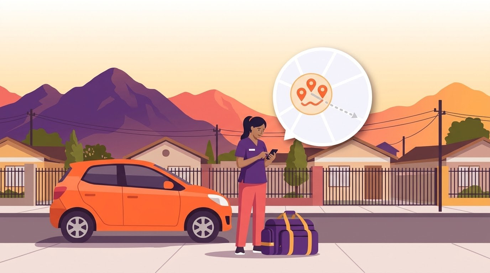
01
8:30 · martes = Machalí
El copiloto agrupa los domicilios por sector, ordena la ruta y muestra km, minutos y la bencinera más barata del camino.
Cualidad (testeo)La ruta fue la vista más valorada (ciclo 1).
Mejora incorporadaDiferencia de km en ambos modos; v3: precios de bencina en línea.
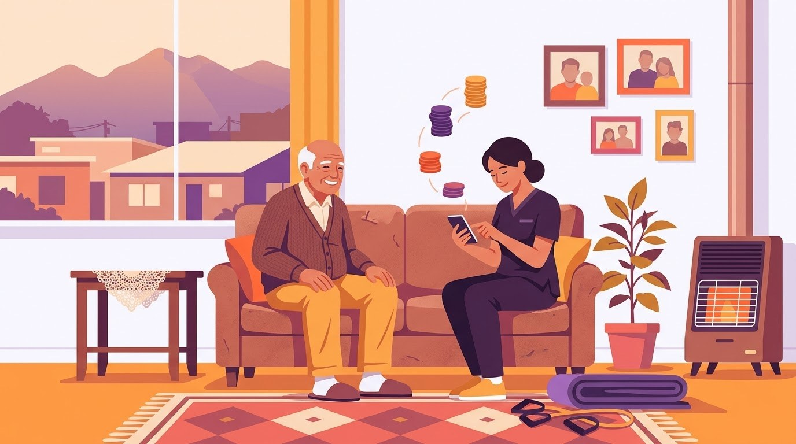
02
10:15 · registra o corrige
Cierra la atención con don Luis en un toque. Si se equivocó o el paciente no estuvo, lo corrige con otro.
Cualidad (testeo)Registro de un toque y cálculo exacto (P1).
Mejora incorporadaDeshacer y “No asistió” (T4, T10).
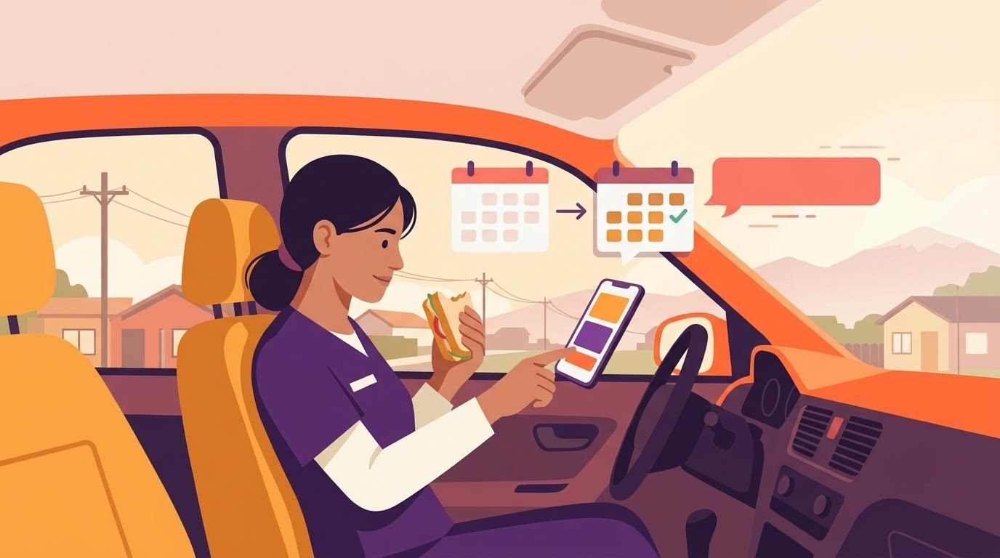
03
12:40 · “voy en camino”
El aviso muestra el mensaje exacto que recibe el paciente; si alguien cancela, el cupo se ofrece a la lista.
Cualidad (testeo)Trato cercano sin escribir mientras maneja.
Mejora incorporadaMensaje visible (v2) y hora liberada (vista paciente).
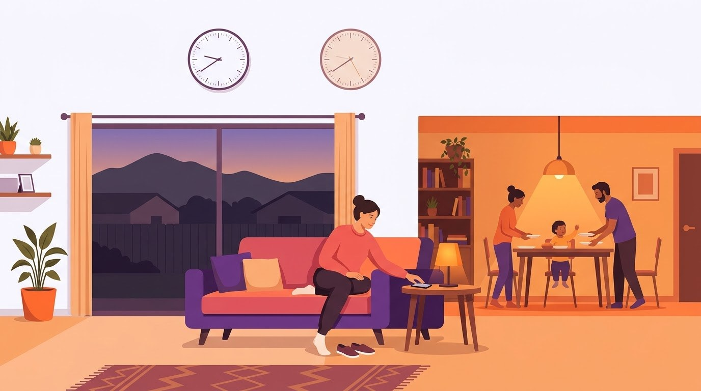
04
20:40 · día cerrado
Cierra un día de cinco atenciones en 11 toques y llega a tiempo a cenar con su familia.
Cualidad (testeo)Sin trabajo nocturno (P4).
Mejora incorporadaPersistencia de datos (P3); v3: respaldo en la nube.
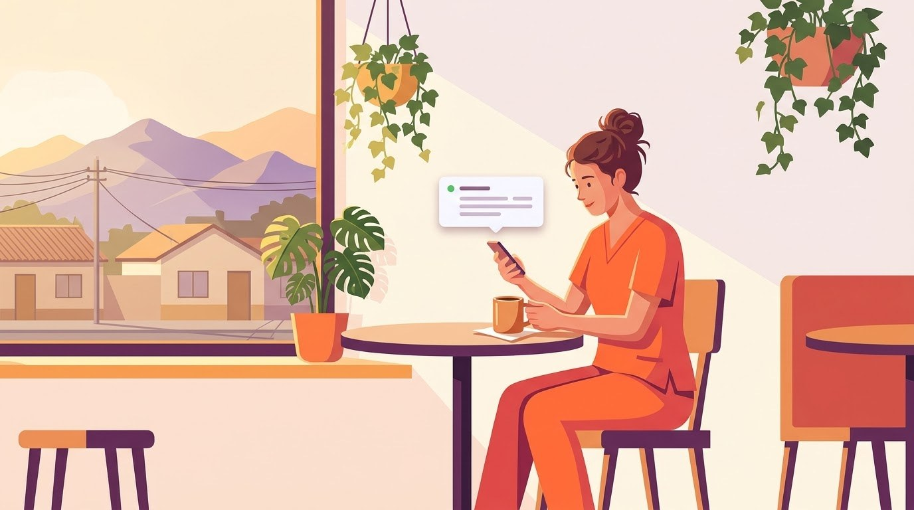
05
Fin de mes · “Mi plata”
Ajusta comisión, costo por km y retención, y envía a la contadora el resumen sin datos clínicos.
Cualidad (testeo)Separa ganancia, impuestos y colchón.
Mejora incorporadaCostos editables y exportación (T9, T11, P5, P6).
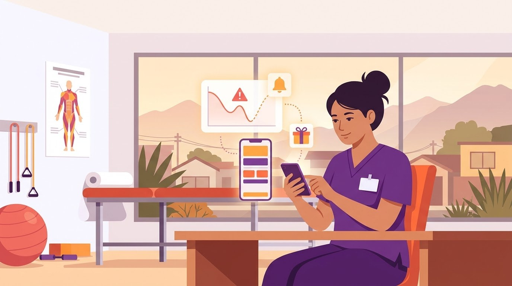
06
Seis semanas antes · febrero
El tablero avisa que febrero viene bajo y propone packs y colchón con su monto; la curva se aplana.
Cualidad (testeo)Acciones con monto (T7).
Mejora incorporadaValores en el gráfico; v3: proyección desde su historial.
Iteración · versión 2
3.1.3.3Mock-up iterado y ajustes fundamentados
Doce cambios, cada uno con su hallazgo.
→
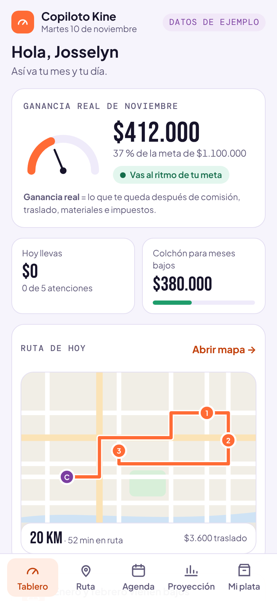
Tablero · v1 → v2
→
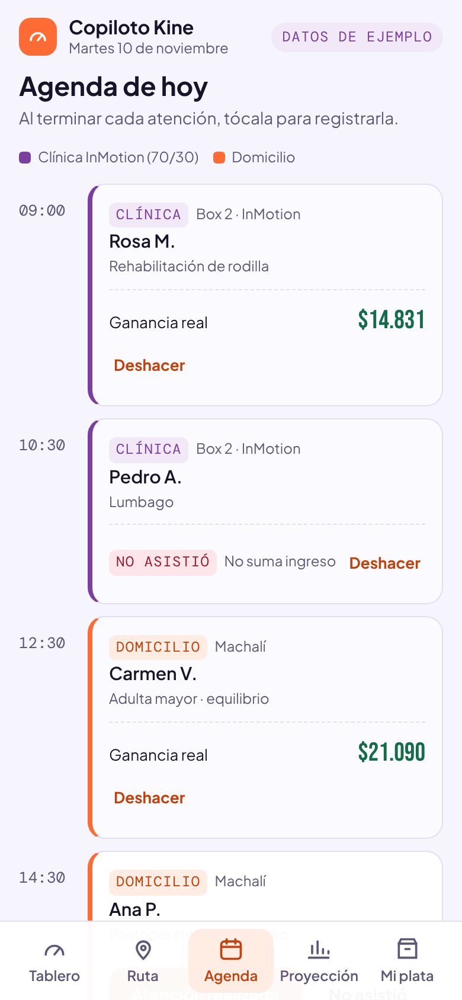
Agenda · v1 → v2
→
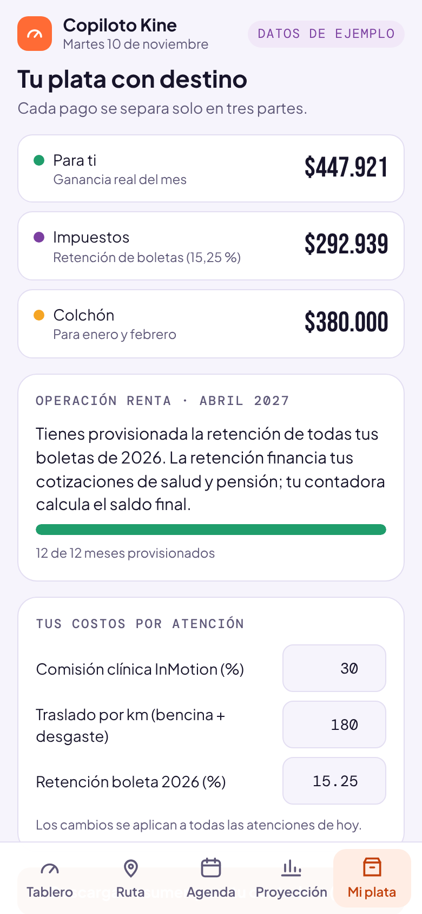
Destinos → Mi plata · v1 → v2
#
Cambio en v2
Hallazgo del ciclo 1
Requerimiento
1
Deshacer una atención
T4 fallida · H3 severidad 3
R6 · R7
2
Estado “No asistió” sin ingreso
T10 fallida · H5 severidad 3
R1
3
Costos editables (comisión, km, retención)
T9 fallida · H7 severidad 3
R3 · R8 · R12
4
Exportación CSV para la contadora, sin datos clínicos
T11 fallida
R12 · R13
5
Naranja accesible en botones (#C2410C) y verde oscuro en estados
11 errores de contraste
R5
6
Botones y enlaces de 44 px o más
7 objetivos táctiles chicos
R5
7
Letra mínima de 12 px
Textos de 10–11 px
R5
8
Definición de “ganancia real” en el tablero
H2 severidad 2
R5
9
Diferencia de km visible en ambos modos de ruta
T6: ahorro oculto
R9
10
Valores en las barras de la proyección
H10 severidad 1
R10
11
Texto del mensaje “voy en camino” visible
Debilidad de propuesta de valor
Cercano
12
“Destinos” pasa a llamarse “Mi plata”
H2 severidad 2
R5
Resultado. Con los mismos scripts del ciclo 1, la versión 2 completa 11 de 11 tareas, con 0 errores WCAG AA, 0 objetivos táctiles bajo 44 px y letra mínima de 12 px. Pruébalo: copiloto-kine.vercel.app/profesional/.
Testeo · ciclo 2
3.1.3.4Ficha de planificación del testeo de la iteración
El ciclo 2 pregunta: ¿resuelve con exactitud lo que ella necesita?
Instrumento
3.1.3.4 Ficha de planificación del testeo de la iteración
Foco
Técnico: necesidades puntuales
Prototipo
v2
Plantilla
Anexo A
Verificar técnicamente que el prototipo v2 resuelve con exactitud y confiabilidad las necesidades puntuales de la kinesióloga independiente (ganancia por atención, costos, impuestos, cierre del día, privacidad y uso en terreno) e identificar las brechas técnicas para la implementación.
Objetivo específico
Participantes
Prototipo
Actividades
Roles
Indicador
Pregunta
Procesamiento
Lugar · tiempo
Exactitud de los cálculos
Equipo técnico
Prototipo v2
Pruebas automáticas contra una hoja de cálculo de referencia (P1, P2, P5, P11)
Benjamín · Néstor
Diferencia ≤ $1 en todos los casos
¿La ganancia mostrada es la correcta?
Script de pruebas con resultado por caso
Remoto 20 min
Cierre del día y continuidad de los datos
Equipo técnico
Prototipo v2
Simular un día de 5 atenciones, inasistencia y recarga (P3, P4, P7)
Néstor
≤ 12 toques; 0 datos perdidos
¿Cerrar el día toma segundos y no pierde nada?
Conteo de toques y comparación antes/después
Remoto 15 min
Privacidad y entrega a la contadora
Equipo + asesor financiero (revisión pendiente)
Exportación CSV
Descargar el resumen y revisar su contenido (P6)
Francisco
0 diagnósticos y 0 nombres completos
¿La contadora recibe lo que necesita y nada más?
Revisión del archivo exportado
Remoto 10 min
Uso en terreno
Equipo técnico
Prototipo v2 en celular
Medir peso, carga, ruta y fuentes sin conexión (P8, P9, P10)
Benjamín
< 100 KB; carga < 1,5 s; legible sin fuentes web
¿Funciona entre domicilios con datos móviles?
Métricas del navegador
Remoto 10 min
Cobertura de requerimientos
Todo el equipo
Prototipo v2 + EV2
Trazar R1–R13 contra pruebas y tareas
Claudia
≥ 75 % cumplidos
¿Qué necesidad queda sin resolver?
Matriz de trazabilidad
Sala INACAP 20 min
Referencia independiente. Las pruebas comparan lo que muestra la app con una hoja de cálculo del equipo: clínica = valor × (1 − comisión 30 %) × (1 − retención 15,25 %); domicilio = valor − km × $180 − materiales − valor × 15,25 %. Script: ciclo2/verificar_tecnico.js.
Testeo · ciclo 2
Resultados de las pruebas técnicas
Exacto, rápido y sin datos clínicos.
11/11
pruebas técnicas aprobadas
$0
diferencia con la referencia en 5 atenciones
11
toques para cerrar el día (antes ~60 min)
39 KB
peso total; legible sin fuentes web
#
Req.
Prueba
OK
Evidencia
P1
R4 · R8 · R12
Ganancia neta por atención coincide con el cálculo de referencia (5 casos)
La tasa de retención se puede actualizar para 2027 (16 %)
✔
a5 con 16 %: app 21100 / ref 21100
Lectura. Las once pruebas pasan. El dato clave para la usuaria: cerrar un día de cinco atenciones toma 11 toques y ningún número digitado, frente a la hora diaria de Excel que describió Catalina en la UA1. Cambiar el costo por km o la tasa de retención recalcula todo al instante, lo que hace a la herramienta resistente al alza de la Ley 21.133.
Testeo · ciclo 2
Cobertura de requerimientos
Ocho de trece cumplen; lo demás es integración.
#
Requerimiento (EV2)
Estado
Prueba
Observación
R1
Cita confirmada → ingreso proyectado sin digitar
Parcial
P2 · P7
Funciona con la agenda de ejemplo; falta leer la agenda real.
R2
Integrarse con la agenda que ya usa
Simulado
—
Se muestra “Conectado a Google Calendar”; la conexión real es brecha B1.
R3
Distinguir clínica (70/30) de domicilio
Cumple
P1 · P5
Comisión editable.
R4
Ganancia neta por atención, semana y mes
Parcial
P1 · P2
Atención, día y mes; la vista semanal no existe.
R5
Lenguaje no contable y lectura de menos de 1 minuto
Cumple
T1 · axe
Lectura sin tocar nada; 0 errores WCAG AA.
R6
Cerrar el día en menos de 30 minutos
Cumple
P4
11 toques para 5 atenciones.
R7
Registrar en el momento de la atención
Cumple
T2 · P3
2 toques; persiste al reabrir.
R8
Descontar traslado y materiales por atención
Cumple
P1 · P5
Costo por km editable.
R9
Agrupar domicilios por sector
Cumple*
P8
*Mapa ilustrativo; la optimización real es brecha B4.
R10
Historial y proyección de 3 a 6 meses
Parcial
T7
Proyección de ejemplo, no calculada desde historial (B3).
R11
Alertar meses bajos y sugerir acciones
Cumple
T7
Acciones con monto que cierran la brecha.
R12
Provisionar retención y estimar Operación Renta
Cumple
P11 · P6
Tasa editable (16 % en 2027); la estimación final queda con la contadora.
R13
Solo datos financieros, nunca ficha clínica
Parcial
P6
La exportación cumple, pero la agenda muestra el motivo de consulta (B6).
8
cumplen (R9 con mapa ilustrativo)
4
parciales: R1, R4, R10, R13
1
simulado: R2, integración con la agenda
Los parciales y el simulado no son problemas de diseño sino de integración con datos reales; se convierten en las brechas B1 a B7.
Testeo · ciclo 2
3.1.2.4Brechas y matriz CDM del ciclo 2
Las brechas no son fallas: son el backlog del MVP.
#
Brecha técnica
Qué hacer
Cuándo
B1
Integración real con la agenda
Leer citas de Google Calendar o Cal.com con permiso de la usuaria.
MVP (UA4)
B2
Datos solo en el celular
Hoy se guardan en el navegador: si cambia de teléfono, pierde el historial. Respaldo cifrado en la nube.
MVP (UA4)
B3
Proyección de ejemplo
Calcularla con el historial propio (promedio por mes del año anterior) desde el tercer mes de uso.
Fase 2
B4
Mapa ilustrativo
Usar un servicio de mapas para ordenar paradas reales y estimar tiempos.
Fase 2
B5
Aviso simulado
Abrir WhatsApp con el mensaje ya escrito (enlace wa.me) sin costo de API.
MVP (UA4)
B6
Motivo de consulta visible
Es un dato de salud: ocultarlo por defecto y dejarlo solo en la agenda original.
Inmediato
B7
Sin costos fijos del mes
La ganancia mensual no descuenta celular, seguros ni capacitaciones; agregar costos fijos.
MVP (UA4)
Matriz CDM del ciclo 2
Cualidades
Debilidades
Mejoras
Producto / servicio
11 de 11 pruebas técnicas aprobadas.
Cálculo exacto: diferencia de $0 frente a la referencia en los 5 casos.
Cierre de un día de 5 atenciones en 11 toques, sin digitar.
Registros persisten al cerrar y reabrir.
39,3 KB y carga en 24 ms (archivo local); legible sin fuentes web.
La agenda es de ejemplo: no hay integración real (B1).
Los datos viven solo en el celular (B2).
La proyección no sale del historial (B3).
La agenda muestra el motivo de consulta, un dato de salud (B6).
Ocultar el motivo de consulta (inmediato).
Integración con Google Calendar y respaldo en la nube para el MVP.
Enlace wa.me para el aviso real.
Costos fijos mensuales.
Propuesta de valor
“Automático y corregible” queda verificado (P3, P4, P7).
Retención configurable: resiste el alza de la Ley 21.133 (P11).
Privacidad por diseño en la exportación (P6).
“Anticipador” no es creíble sin historial real.
“Se conecta a la agenda que ya usa” todavía no es cierto en el prototipo.
La ganancia del mes omite costos fijos: puede sobrestimar.
Ajustar la redacción de la propuesta a lo que el MVP cumple.
Prometer la proyección “desde tu tercer mes de uso”.
Validar las reglas tributarias con el asesor financiero.
Análisis y conclusiones. El prototipo v2 cumple 8 de 13 requerimientos, 4 de forma parcial y 1 simulado. Lo que falta no es diseño sino integración: agenda real, respaldo en la nube y proyección desde el historial. B6 (motivo de consulta visible) se resuelve antes de usar datos reales.
Testeo · ciclo 2
Propuesta técnica del MVP: integraciones
Lo que falta no es diseño: es conectar datos reales.
El ciclo 2 dejó claro que lo que falta no es diseño sino integración con datos reales. Esta es la propuesta técnica para el MVP de la Unidad 4: qué se conecta, qué se agrega y qué se quita.
Precios de combustibleCosto por km calculado con el precio real de la bencinera más cercana y aviso de la más barata en la ruta del día.
Optimización de rutaOrden de domicilios según tráfico real, respetando la ventana de 30 min que acepta cada paciente (H5).
AgendaCada cita se convierte sola en ingreso proyectado (resuelve R1, R2 y B1).
COPILOTO KINE · MVP
App web instalable (PWA) · cálculo de ganancia real · ruta · proyección · sin datos clínicos
MensajeríaRecordatorio, “voy en camino”, comprobante y hora liberada (M1–M4).
Base de datosHistorial seguro entre dispositivos (B2) y proyección desde el historial propio (B3).
Pagos y boletaEl pago registra el ingreso solo; el folio cuadra con lo que ve la contadora.
Integración
Fuente / servicio
Para qué
Sost.
Etapa
Precios de combustible
API pública “Bencina en Línea” de la Comisión Nacional de Energía (registro gratuito)
Costo por km calculado con el precio real de la bencinera más cercana y aviso de la más barata en la ruta del día.
EcAm
MVP
Optimización de ruta
Servicio de rutas (Google Routes u OpenRouteService) con optimización de paradas y ventanas horarias
Orden de domicilios según tráfico real, respetando la ventana de 30 min que acepta cada paciente (H5).
AmEc
MVP
Agenda
AgendaPro (la que usa Josselyn, retroalimentación 12/11) y, como alternativa, Google Calendar o Cal.com
Cada cita se convierte sola en ingreso proyectado (resuelve R1, R2 y B1).
So
MVP
Mensajería
Enlace wa.me (sin costo) y luego WhatsApp Business API
Recordatorio, “voy en camino”, comprobante y hora liberada (M1–M4).
So
MVP → fase 2
Base de datos
Base de datos en la nube con cifrado y respaldo (p. ej. Supabase/PostgreSQL) + modo sin conexión
Historial seguro entre dispositivos (B2) y proyección desde el historial propio (B3).
So
MVP
Pagos y boleta
Link de pago (Mercado Pago) y registro del folio de la boleta de honorarios del SII
El pago registra el ingreso solo; el folio cuadra con lo que ve la contadora.
Ec
Fase 2
Testeo · ciclo 2
Funcionalidades: agregar, mantener y quitar
Menos digitación, más datos reales.
Acción
Funcionalidad
Por qué
Agregar
Ganancia por hora por canal (clínica, domicilio, piscina, grupal) y modo clínica por factura mensual
Pedido directo de la clienta el 12/11 (RF4, RF5).
Agregar
Clases grupales para adultos mayores (cupos y cobro por persona)
Acción concreta para meses bajos (RF10).
Agregar
Bencinera más barata en la ruta y costo por km automático
Hoy el costo por km es fijo ($180) y lo ajusta la usuaria (T9).
Agregar
Ventana horaria por paciente y marca “hora fija”
La ruta solo es real si el paciente la acepta (H5); los de hora fija no se mueven.
Agregar
Llegada detectada por ubicación (geocerca) para sugerir “atención realizada”
Reduce aún más el registro manual, siempre con confirmación de la usuaria.
Agregar
Costos fijos del mes (celular, seguros, cursos)
La ganancia mensual hoy los omite (B7).
Agregar
Respaldo en la nube y modo sin conexión
Datos solo en el celular (B2); señal irregular entre domicilios.
Mantener
Registro de un toque, deshacer e inasistencia
Validado en ciclos 1 y 2 (T2, T4, T10, P4).
Mantener
Exportación para la contadora sin datos clínicos
Verificado (P6) y alineado con la Ley 21.719.
Quitar
Motivo de consulta visible en la agenda
Es un dato de salud (B6): queda solo en la agenda original.
Quitar
Mapa ilustrativo y proyección de ejemplo
Se reemplazan por la ruta real y la proyección desde el historial (B3, B4).
Quitar
Nombres completos de pacientes en pantallas compartidas
Iniciales por defecto; privacidad por diseño.
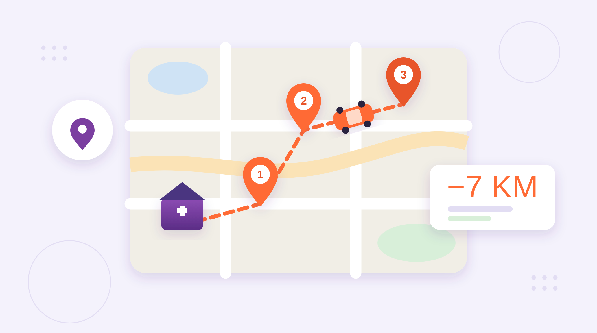
Ejemplo · costo por km con precio real. Costo de combustible por km = precio del litro ÷ rendimiento del auto. Con un rendimiento de 14 km/l, cada $50 que baja el litro reduce el costo en ~$3,6 por km; en los ~400 km de domicilios de un mes son ~$1.430 menos, más el ahorro de los 140 km que evita la ruta sugerida. La app usaría el precio de la bencinera elegida en lugar del valor fijo de $180/km del prototipo.
Testeo · ciclo 3 con la clienta
3.1.2.3Ficha de planificación del testeo · ciclo 3
Instrumento
3.1.2.3 Ficha de planificación del testeo
Foco
Validación externa
Prototipo
v2 y propuesta (carpeta “Grupo2”)
Plantilla
Anexo A
Validar con la clienta y con actores del ecosistema (Sercotec y docentes) si la propuesta de valor y el prototipo v2 responden a su forma real de trabajar, y recoger qué ajustar antes del testeo de uso con la usuaria.
Objetivo específico
Participantes
Prototipo
Actividades
Roles
Indicador
Pregunta
Procesamiento
Lugar · tiempo
Contrastar la propuesta con su rutina real
Josselyn Toledo (clienta)
Propuesta y prototipo v2 (carpeta “Grupo2”)
Lectura guiada de la propuesta y preguntas abiertas
Mabel (lectura) · equipo (registro posterior)
Reconoce el problema y su forma de registrar
¿Así lo hace hoy? ¿Qué le falta?
Transcripción con minuto y codificación RF1–RF12
Meet 40 min
Recoger criterios de viabilidad
Encargada Sercotec y profesor a cargo
Las 4 propuestas del curso
Revisión comparada en la misma reunión
Mabel · Ariel
Sugerencias de costo, alcance y formato
¿Es viable, barata y útil para lo contable?
Tabla de sugerencias por actor
Meet 40 min
Ubicar la propuesta frente a las otras
Clienta, Sercotec y docentes
Documentos en pantalla de las 4 propuestas
Comparación de enfoques
Equipo (análisis posterior)
Diferencias claras y puntos combinables
¿Qué hace nuestra propuesta que las otras no?
Matriz comparativa y “qué tomamos”
Remoto 2 h de análisis
Por qué cuenta como ciclo de testeo. Es la primera vez que la propuesta y el prototipo se enfrentan a la clienta real y a actores del ecosistema (Sercotec y docentes), con preguntas abiertas y comparación con otras tres propuestas. El procesamiento es reproducible: transcripción con minuto, codificación de 12 hallazgos (RF1–RF12), patrones y matriz CDM. Sus resultados están en las páginas siguientes.
Testeo · ciclo 3 con la clienta
Retroalimentación de la clienta y Sercotec
La clienta ya hace lo que la app promete: a mano y de noche.
Reunión de Meet del 12 de noviembre (08:33, 40 min) con Mabel Aceituno Romero (encargada de Sercotec), la clienta Josselyn Toledo, el profesor a cargo Ariel O’Nell (INACAP) y Ana Luisa Aguilera, docente INACAP de otra sección que también trabajó el caso. Se revisaron cuatro propuestas: una herramienta de gestión integral materializada en Excel, una planilla Excel de gestión, un modelo de programas grupales y Copiloto Kine (nuestro equipo, carpeta “Grupo2”), leída entre el minuto 30:49 y el 35:29. La transcripción completa, con cada interlocutor identificado, está en retroalimentacion/. Las citas son textuales con el minuto de la grabación.
#
Hallazgo y cita de la clienta
Min.
Implicancia para Copiloto Kine
RF1
No conoce una herramienta que haga esto
“No. Así como solamente por pauta, por agenda, por horario, pero nada más que eso.”
12:22
Diferenciación confirmada: las apps que usa solo agendan.
RF2
Ya registra todo cada noche en el teléfono
“Cada noche anoto todo… la ganancia, lo que gasto en bencina durante el día… cuántas sesiones hice y cuánto gané en cada sesión.”
36:25
La app debe reemplazar ese hábito nocturno, no crear uno nuevo.
RF3
Usa dos agendas: AgendaPro y una agenda médica
“Tengo dos tipos de agenda, la AgendaPro y la [agenda médica digital], tanto para personal y en clínica.”
36:25
Integrar AgendaPro antes que Google Calendar.
RF4
En la clínica factura un monto mensual
“En clínica ya dejo como un monto fijo porque al final yo hago la factura y veo el monto total del mes.”
36:25
Modo clínica por factura mensual, además del cálculo por atención.
RF5
Quiere saber qué canal es más rentable
“Si sale más rentable en clínica o en domicilio… en clínica puedo atender dos, tres pacientes por hora… a domicilio atiendo solo una persona, con el viaje incluido.”
19:21
Ganancia por hora por canal como métrica central.
RF6
El traslado le cuesta tiempo, no solo bencina
“Agua Buena… queda para la precordillera… es muy malo el camino… me demoro como 25, 30 minutos.”
20:47
Incluir el tiempo de viaje como costo (hora profesional) y una tarifa por tramo.
RF7
Hace más que kinesiología
“Trabajo tanto en piscina. Yo soy psicomotricista acuática… los entrenamientos personalizados que hago en mi propio [gimnasio].”
05:56 · 23:27
Varios servicios y lugares con costos distintos: clínica, domicilio, piscina, gimnasio.
RF8
Su territorio es San Fernando y alrededores
San Fernando, Agua Buena, Las Cabras (tres pacientes en clínica) y la piscina temperada camino a Roma.
07:59 · 20:47 · 28:17
Ajustar rutas y ejemplos a su territorio real (no solo Rancagua–Machalí).
RF9
En la región se valora poco lo especializado
“La gente no sabe lo que es, ni sabe lo que vale realmente… encuentra que es caro.”
06:42
Comunicar el valor del servicio (comprobante, explicación) y cuidar el precio de la app.
RF10
Grupal sí, pero preventivo
Lo terapéutico es individual; ve “fantástico” hacer clases grupales para adultos mayores en Las Cabras, que “andan buscando cositas para hacer en grupo”.
23:27 · 28:17
Módulo de clases grupales (cupos, asistencia, cobro por persona) como acción de la proyección.
RF11
Sus clientes manejan sus tiempos
“La mayoría son empresarios, independientes, manejan sus tiempos.”
05:56
Indicio favorable para la ventana de llegada de 30 min (H5); se valida igual con pacientes.
RF12
Interés directo en la app
“Me encantaría conocerla.” · “Felicitaciones a sus alumnos.”
13:31 · 38:35
Disposición a probar: base para la sesión con la usuaria.
Testeo · ciclo 3 con la clienta
Patrones y cambios a la propuesta
Lo que pidieron Sercotec y los docentes
Quién
Sugerencia
Min.
Ariel O’Nell (profesor a cargo)
Bajo o cero costo, usable en teléfono, tablet y computador; todo parametrizado: ella ingresa datos y la app entrega el cálculo, con resúmenes semanales y mensuales que sirvan a la parte contable.
10:47
Ariel O’Nell (profesor a cargo)
Costo oculto: la hora hombre del traslado. Permite definir el valor exacto de su hora profesional.
19:45
Ariel O’Nell (profesor a cargo)
Las propuestas no son excluyentes: puede combinar una app, una planilla y un modelo grupal.
17:33
Mabel Aceituno (encargada Sercotec)
Que los estudiantes estimen cuánto costaría la solución.
12:30
Mabel Aceituno (encargada Sercotec)
Analizar por tipo de cliente y lugar (particular vs. clínica, por semana y mes) para decidir dónde enfocarse.
18:23
Mabel Aceituno (encargada Sercotec)
No toda cita agendada se concreta; la bencina sube: conviene partir con valores fijos estimados.
15:12 · 33:31
Ana Luisa Aguilera (docente INACAP)
Las propuestas de su sección también apuntan al agendamiento y la organización interna; la retroalimentación servirá para mejorarlas.
39:29
Patrones al hilar los hallazgos
Patrón
Evidencia
Qué significa
Rentabilidad por canal y por hora
RF5 · RF6 · RF7 · Ariel 19:45
La pregunta de fondo no es “cuánto gané” sino “qué me conviene”: clínica, domicilio, piscina o grupo.
El hábito ya existe
RF2 · RF3 · RF4
Josselyn ya registra cada noche y usa AgendaPro: la app gana si se monta sobre eso y lo hace en segundos.
El territorio define el costo
RF6 · RF8 · Mabel 33:31
Caminos rurales y de precordillera: el traslado pesa más en tiempo que en bencina.
Diversificar ingresos
RF7 · RF10 · Ariel 26:57
Clases grupales preventivas para adultos mayores son la acción más concreta para los meses bajos.
Bajo costo y complementariedad
Ariel 10:47 · 17:33 · Mabel 12:30
La solución debe ser barata, multi-dispositivo y exportable a Excel para convivir con otras propuestas.
Cambios a la propuesta (prototipo v3)
#
Cambio
Origen
Dónde
1
Integración con AgendaPro (o su exportación) y la agenda de la clínica; Google Calendar queda como alternativa
RF3
Integración · MVP
2
“Ganancia por hora” por canal: clínica, domicilio, piscina, gimnasio y grupal
RF5 · RF7
Tablero · MVP
3
Tiempo de traslado como costo (valor de la hora profesional) y tarifa sugerida por tramo
RF6 · Ariel
Ruta · MVP
4
Modo clínica por factura mensual (monto fijo del mes) además del cálculo por atención
RF4
Registro · MVP
5
Servicios configurables con su propio costo (piscina, gimnasio, domicilio, clínica)
RF7
Ajustes · MVP
6
Módulo de clases grupales: cupos, asistencia y cobro por persona; aparece como acción en la proyección
RF10
Proyección · fase 2
7
Reportes semanales y mensuales por tipo de cliente y lugar, exportables a Excel o Google Sheets
Mabel · Ariel
Reportes · MVP
8
Ejemplos y rutas en su territorio: San Fernando, Agua Buena, Las Cabras
RF8
Prototipo v3
9
Costo estimado de la solución visible en la propuesta (MVP con herramientas de bajo costo)
Mabel 12:30
Propuesta
Lectura. La clienta valida el núcleo (no existe algo así; ya lo hace a mano cada noche; le importa qué canal le conviene) y corrige dos supuestos: usa AgendaPro y la clínica le paga con factura mensual.
Testeo · ciclo 3 con la clienta
Hallazgos generales y otras propuestas
Todos vieron el mismo problema: la diferencia está en cómo se resuelve.
Hallazgos generales de la conversación
Hallazgo
Evidencia
Qué hacemos con esto
Todas las secciones vieron el mismo problema
“Las propuestas pueden ser muy similares porque todos identificaron el tema de los ingresos.” (Mabel, 38:45) · “Es el tema del agendamiento y la organización interna.” (Ana, 39:29)
La diferenciación no está en el problema sino en cómo se resuelve: ruta, tiempo de traslado, retención, proyección y vista paciente.
La clienta elegirá comparando o combinando
“Presentaciones estandarizadas… para comparar las propuestas.” (Ariel, 37:45) · “No son excluyentes… una batería de apoyo.” (Ariel, 17:33)
Mostrar con claridad qué hace nuestra propuesta que las otras no, y que puede convivir con ellas (exportar a Excel).
Hay tres modelos de apoyo en juego
App de gestión, planilla Excel dinámica y modelo de negocio grupal (Ariel, 29:43); en los documentos, dos de las cuatro propuestas se resuelven en Excel.
Copiloto Kine puede integrar los tres: app + exportación a Excel + módulo grupal.
El costo es una pregunta obligada
“Que se pueda identificar más o menos cuánto saldría.” (Mabel, 12:30) · “De muy bajo costo… plataformas liberadas.” (Ariel, 12:52)
Incluir un costeo del MVP y del uso mensual en la entrega final.
Lo manual no escala
“Al ser una planilla Excel hay que alimentarla… no va a tener la información sola.” (Mabel, 15:12)
La automatización (agenda, ruta, cálculo) es la ventaja frente al Excel.
Cada propuesta refleja la formación de su equipo
Alumnos contables proponen desde lo contable; administración, desde la gestión. (Ariel, 02:20)
Nuestro aporte como Diseño Digital es la experiencia: claridad, accesibilidad, prototipo navegable y la mirada del paciente.
La clienta está abierta y comprometida
“Me encantaría conocerla.” (13:31) · “Muy buenas las propuestas… hay que dar una muy buena resolución.” (39:07)
Hay disposición para la sesión de testeo con ella.
Las otras propuestas revisadas
Propuesta
Cómo lo propone
Reacción en la reunión
Qué tomamos
Herramienta digital de gestión integral (Excel) 09:00–13:37
Storyboard iterado con la persona “Priscilla”: organizar pacientes y atenciones, centralizar finanzas, ver resultados y planificar captación. Se materializa en una plantilla Excel reutilizable (hojas de pacientes, agenda, ingresos y gastos; cálculos automáticos; tablero con indicadores y gráficos). Mejoras previstas: guía de uso, respaldo, alertas, resúmenes mensuales y metas.
Ariel la presenta como una app simple, de bajo o cero costo, en teléfono, tablet o computador, que considere el traslado según la distancia del paciente. Mabel pide estimar su costo. Josselyn: no conoce algo así; “me encantaría conocerla”.
Es la más cercana a la nuestra, pero depende de que ella digite todo. Nos diferencian la agenda conectada, la ruta, el tiempo de traslado, la retención y la proyección.
Planilla Excel de gestión kinesiológica 14:07–17:33
Problema: organizar atenciones y controlar ingresos y gastos sin una herramienta centralizada. Prototipo: hojas de atenciones y movimientos, listas desplegables (tipo, modalidad, estado, medio de pago), panel mensual y anual; separa ingresos dependientes e independientes. Costos: elaborarla, aprender a usarla, tener computador y Excel, mantenerla al día.
Mabel: hay que alimentarla a mano, pero permite analizar por tipo de cliente. Josselyn: “más similar, pero más detallado” que lo que ya hace. Ariel: complementaria a una app.
Tomamos el panel mensual y anual, el estado de la atención y la exportación a Excel; superamos la carga manual.
Programas grupales “Movimiento y bienestar todo el año” 21:41–29:43
Modelo de negocio en 6 escenas: la estacionalidad corta la continuidad e ingresos; escuchar a niños, adultos, mayores y trabajadores; programa anual adaptado por edad; convenios con empresas y municipalidades; talleres de movimiento, recreación y pausas activas; evaluar asistencia, costos y permanencia.
Josselyn: lo terapéutico (y la psicomotricidad acuática) es individual; lo grupal preventivo para adultos mayores en Las Cabras sí le interesa. Ariel: ejemplo de gimnasia acuática grupal muy rentable en Rancagua.
Incorporamos clases grupales como acción de la proyección y un módulo de cupos y cobro por persona.
Copiloto Kine (nuestro equipo, carpeta “Grupo2”) 30:49–35:29
App web: cada cita de la agenda se vuelve ingreso; ganancia neta con comisión, traslado y materiales; tablero con semáforo; v1 (atención, tablero, proyección) y v2 (retención y colchón, domicilios por sector, horas libres, cierre antes de las 21 h); $20–25 mil/mes de referencia.
Mabel lo explica con un domicilio en Rengo y valores estimados de bencina. Josselyn: “eso hago yo igual en el teléfono… simplemente no tengo esa aplicación”.
Valida el núcleo; corregimos AgendaPro, factura mensual de clínica y ganancia por hora por canal.
Testeo · ciclo 3 con la clienta
3.1.4Las 4 propuestas frente a frente
Mabel lo dijo al cierre: “las propuestas pueden ser muy similares porque todos identificaron el tema de los ingresos” (38:45). La diferencia está en cómo resuelve cada una. Esta matriz compara las cuatro propuestas revisadas el 12/11 según lo que mostraron en pantalla.
Propuesta
La cita entra sola desde su agenda
Ganancia real por atención
Traslado en bencina y en tiempo
Rentabilidad por canal y por hora
Anticipa meses bajos
Nuevos ingresos grupales
Exporta a Excel
Uso en el celular entre domicilios
Experiencia del paciente
Costo para ella
Herramienta integral en Excel
○
◐
◐
◐
◐
○
●
◐
○
$0 + tiempo de digitación
Planilla Excel de gestión
○
◐
○
◐
○
○
●
○
○
$0 + computador y Excel
Programas grupales
○
○
○
○
●
●
○
○
◐
Espacio, convenios y difusión
Copiloto Kine v3
◐
●
●
●
●
◐
●
●
●
Piloto $0 · luego $9.990/mes
● cubre · ◐ parcial · ○ no cubre. Copiloto Kine marca ◐ en “la cita entra sola” porque en el prototipo la agenda es simulada (la integración real es del MVP) y ◐ en grupal porque el módulo calcula la clase pero no gestiona inscripciones. Las propuestas no son excluyentes (Ariel, 17:33): el resumen de Copiloto Kine se exporta a una planilla y la clase grupal toma el modelo del tercer equipo.
Lectura
Las dos propuestas en Excel cubren bien la exportación y el análisis por tipo de cliente, pero dependen de que Josselyn digite todo. El modelo grupal aporta lo que ninguna app tiene: una nueva fuente de ingreso para los meses bajos. Copiloto Kine es la única que parte de la agenda, cuenta el tiempo de viaje y piensa en el paciente; por eso en la v3 incorporamos la exportación a planilla y la clase grupal, en lugar de competir con ellas.
Testeo · ciclo 3 con la clienta
3.1.2.4Matriz CDM del ciclo 3
Instrumento
3.1.2.4 Matriz CDM con propuesta de valor
Fuente
Transcripción 12/11 · RF1–RF12
Prototipo
v2
Plantilla
Anexo A
Cualidades
Debilidades
Mejoras
Producto / servicio
“Eso hago yo igual en el teléfono… simplemente no tengo esa aplicación” (36:25): el núcleo calza con su rutina.
No conoce otra herramienta que cruce agenda y ganancia (RF1, 12:22).
El cálculo con traslado se entiende sin explicación técnica (Mabel lo explica con un domicilio en Rengo).
Conecta Google Calendar, pero ella usa AgendaPro y la agenda de la clínica (RF3).
Trata la clínica por atención; ella factura un monto fijo mensual (RF4).
Solo existen clínica y domicilio; también atiende en piscina y gimnasio (RF7).
Cuenta la bencina pero no el tiempo de viaje (RF6, Ariel 19:45).
Ejemplos en Rancagua y Machalí; su territorio es San Fernando, Agua Buena y Las Cabras (RF8).
Agenda desde AgendaPro y agenda de la clínica.
Modo clínica por factura mensual.
Servicios configurables con su costo.
Tiempo de viaje como costo y tarifa por tramo.
Resumen semanal y mensual por canal, exportable a Excel.
Propuesta de valor
Diferenciación confirmada: las apps que usa “solo agendan”.
Reemplaza un hábito que ya existe (registro nocturno, RF2).
La pregunta de fondo es “qué me conviene”, no solo “cuánto gané” (RF5).
Falta el costo de la solución (Mabel, 12:30).
Compite con propuestas en Excel: debe mostrar por qué no hay que “alimentarla”.
Ganancia por hora por canal como métrica central.
Costeo del MVP y precio piloto bajo.
Clase grupal preventiva como nueva fuente de ingreso (RF10).
Convivir con Excel: exportación del resumen.
Análisis y conclusiones
La clienta valida el núcleo —“eso hago yo igual en el teléfono… simplemente no tengo esa aplicación”— y, al mismo tiempo, desarma cuatro supuestos del prototipo: no usa Google Calendar sino AgendaPro; la clínica no le paga por atención sino con una factura mensual; no trabaja en dos lugares sino en cuatro; y en su territorio el traslado cuesta más en tiempo que en bencina. La pregunta de fondo cambia de “cuánto gané” a “qué me conviene”. Esa es la base de la versión 3.
Testeo · ciclo 3 con la clienta
Cómo aplicamos los hallazgos
De la conversación a cambios medibles.
Cada hallazgo se traduce en una acción en el producto, en la propuesta que se presenta y en una forma de validarlo. Así la retroalimentación no queda como comentario, sino como cambios medibles para el prototipo v3 y la entrega final.
Hallazgos generales → acciones
Hallazgo
En el producto
En la propuesta y presentación final
Cómo lo validamos
Todos vieron el mismo problema
Destacar lo que solo hace Copiloto Kine: la cita entra sola, ruta con tiempo de traslado, retención apartada, proyección y vista paciente.
Lámina comparativa de las 4 propuestas en la presentación final.
Preguntar a Josselyn qué la haría elegir una u otra.
Comparará o combinará propuestas
Exportar a Excel o Google Sheets con el formato de panel mensual y anual, para convivir con una planilla.
Mensaje: “funciona con lo que ya usas: AgendaPro y Excel”.
Prueba: abrir el resumen exportado en una planilla.
Tres modelos en juego (app, Excel, grupal)
Integrarlos en una hoja de ruta: núcleo app → exportación Excel → módulo de clases grupales.
Presentarlo como una “batería de apoyo” en un solo lugar.
Validar con ella el orden de prioridad.
El costo es pregunta obligada
Costeo del MVP: horas del equipo, servicios en planes gratuitos o de bajo costo, enlace wa.me y API de combustible sin costo.
Tabla de costos de desarrollo, de operación mensual y precio para la usuaria (referencia EV2: $20–25 mil/mes, a validar).
Pregunta de precio del guion A (H4).
Lo manual no escala
Medir automatización: % de atenciones que entran solas desde la agenda y minutos de cierre del día.
Mostrar el contraste con las planillas: “no hay que alimentarla”.
Meta EV2: ≥ 80 % de atenciones registradas solas; cierre < 30 min.
Cada equipo propone desde su formación
Reforzar lo de Diseño Digital: experiencia de uso, accesibilidad AA, mirada del paciente.
Demo en vivo del prototipo en el celular durante la presentación.
Cuestionario SUS ≥ 75 con Josselyn.
La clienta está abierta
Agendar la sesión de testeo con el prototipo v3 a la brevedad.
—
Kit de testeo, guion A, con preguntas sobre las otras propuestas.
Lo que tomamos de las otras propuestas
Fuente
Lo que proponen
Cómo lo aplicamos (v3 y MVP)
Herramienta integral en Excel
Guía de uso, respaldo, alertas, resúmenes mensuales y metas de crecimiento.
Guía de inicio en 3 pasos; respaldo en la nube (B2); resumen mensual automático; meta de pacientes nuevos además de la meta de ganancia.
Planilla Excel de gestión
Listas desplegables de tipo, modalidad, estado y medio de pago; panel mensual y anual; ingresos dependientes e independientes.
Campos de estado y medio de pago en cada atención; vista anual; separación clínica (factura mensual) / particulares.
Programas grupales
Estacionalidad, convenios con empresas y municipalidades, pausas activas, seguimiento de asistencia y permanencia.
Clases grupales en la proyección de meses bajos; convenios como tipo de cliente (cobro a una institución); pausas activas para las empresas de sus propios clientes; asistencia y permanencia por grupo.
Comentarios del profesor y Sercotec
Usable en teléfono, tablet o computador; todo parametrizado; resúmenes semanales y mensuales; costo de la hora hombre.
App web instalable en cualquier dispositivo; resumen semanal; valor de su hora profesional calculado con el tiempo de traslado.
Del ciclo 3 a la versión 3
2 CANALES → 5 CANALES.
La v3 trabaja como ella: clínica con factura mensual, domicilio, piscina, gimnasio y clase grupal, en San Fernando y sus caminos rurales.
12
Cambios en v3
Cada uno trazado a un hallazgo de la clienta (RF1–RF12) o de Sercotec y los docentes.
21/21
Tareas completadas
11 tareas base (regresión) y 10 nuevas, una por cambio.
0
Errores WCAG AA
Cálculos idénticos a la referencia en 5 de 5 casos.
Iteración del prototipoVersión 3
Iteración · versión 3
De la versión 2 a la versión 3
El manual pide que en la iteración se ajusten la metáfora, los atributos y los prototipos, dando paso a nuevos testeos. Esta segunda iteración parte de la matriz CDM del ciclo 3 —la primera con la clienta real— y vuelve a pasar por los cuatro instrumentos 3.1.3.
Instrumento
Versión 2
Versión 3
Hallazgo que la motiva
3.1.3.1 (v2 → v3) Metáfora y atributos
Versión 2 Copiloto que lee la ruta y lleva las cuentas; “Claro”, “Automático y corregible”, “Sostenible”.
Versión 3 Copiloto que conoce el terreno y compara pistas; nuevo atributo “Justo con su tiempo”; “Conectado y corregible”.
RF5 · RF6 · RF7 · RF8
3.1.3.2 (v2 → v3) Storyboard
Versión 2 Un día en Rancagua–Machalí, solo clínica y domicilio.
Versión 3 Un día en San Fernando con clínica, Agua Buena, piscina y gimnasio; cierre con resumen y clase grupal.
RF2 · RF3 · RF7 · RF8 · RF10
3.1.3.3 (v2 → v3) Mock-up
Versión 2 Prototipo v2: 5 vistas, 2 canales, clínica por atención, Google Calendar.
Versión 3 Prototipo v3: 12 cambios, 5 canales, factura mensual, tramos y resumen exportable · 21/21 tareas, 0 errores AA.
CDM ciclo 3
3.1.3.4 (ciclo 2 → 4) Ficha de testeo
Versión 2 Ciclo 2 técnico, interno.
Versión 3 Ciclo 4 con la usuaria real y una par, en su celular, con tareas nuevas, SUS y precio.
Ciclo 3: la clienta ya validó el problema
3.1.2.4 (ciclo 3) Matriz CDM
Versión 2 Ciclo 2: brechas técnicas.
Versión 3 Ciclo 3: validación externa con clienta, Sercotec y docentes.
Reunión 12/11
3.1.5 (v2 → v3) Propuesta de valor
Versión 2 “Ordena su ruta y convierte cada atención en ganancia real…”
Versión 3 “…en clínica, a domicilio, en piscina o en el gimnasio… ganancia por hora, contando el tiempo de viaje… cobre lo justo por cada tramo”.
RF5 · RF6 · RF7
Las plantillas oficiales de la v3 (storyboard iterado y ficha del ciclo 4) y del ciclo 3 (ficha y CDM) están en el Anexo A.
Iteración · versión 3
3.1.3.1Panel de metáforas y atributos (v3)
Instrumento
3.1.3.1 Panel de metáforas y atributos iterado
Fuente
Matriz CDM del ciclo 3
Cambio
Metáfora, 2 atributos ajustados y 1 nuevo
Antes · v2
“Copiloto Kine es como el copiloto de un rally: lee la ruta, canta los tiempos y lleva las cuentas mientras ella maneja.”
Después · v3
“Copiloto Kine es como el copiloto de un rally que conoce el terreno: lee cada tramo —ciudad, ripio o precordillera—, canta cuánto rinde cada hora de carrera y lleva las cuentas de todas sus pistas: clínica, domicilio, piscina y gimnasio.”
Fundamento. La clienta no maneja una sola pista: atiende en cuatro lugares y su territorio es rural (San Fernando, Agua Buena, Las Cabras). El copiloto ya no solo lee la ruta: conoce el terreno, sabe que un camino de precordillera cuesta tiempo y compara las pistas por lo que rinden por hora.
Anticipador
…en el sentido de que canta la curva antes de llegar: avisa enero y febrero y propone acciones con su monto, ahora también la clase grupal con su punto de equilibrio.
Ec
Ajuste según el ciclo 3Se mantiene y se amplía con la clase grupal (RF10).
Claro
…en el sentido de que responde de un vistazo “qué me conviene”: ganancia por hora de cada canal ordenada de mayor a menor.
So
Ajuste según el ciclo 3Se profundiza: de “cuánto gané” a “dónde rindo más” (RF5).
Conectado y corregible
…en el sentido de que toma las citas de AgendaPro y de la clínica sin digitar, y cualquier error o inasistencia se corrige con un toque.
SoEc
Ajuste según el ciclo 3Antes “Automático y corregible”: ahora nombra las agendas reales (RF3).
Justo con su tiempo
…en el sentido de que cuenta el viaje como hora de trabajo: muestra cuánto vale ese tiempo y sugiere cobrar por tramo.
EcAm
Ajuste según el ciclo 3Nuevo atributo (RF6 · Ariel 19:45). Reemplaza a “Sostenible”, que se reparte en los otros cuatro.
Iteración · versión 3
3.1.3.2Storyboard iterado (v3)
Instrumento
3.1.3.2 Storyboard iterado
Insumo
Matriz CDM del ciclo 3
Formato
Escenas con capturas del prototipo v3
Plantilla
Anexo A
Copiloto Kine es el copiloto de la kinesióloga independiente que trabaja en varios lugares: toma las citas de AgendaPro y de la clínica, ordena su ruta y convierte cada atención —en clínica, a domicilio, en piscina o en el gimnasio— en ganancia real y ganancia por hora, contando también el tiempo de viaje, para que decida dónde le conviene atender, cobre lo justo por cada tramo y prepare los meses bajos sin anotar nada de noche.
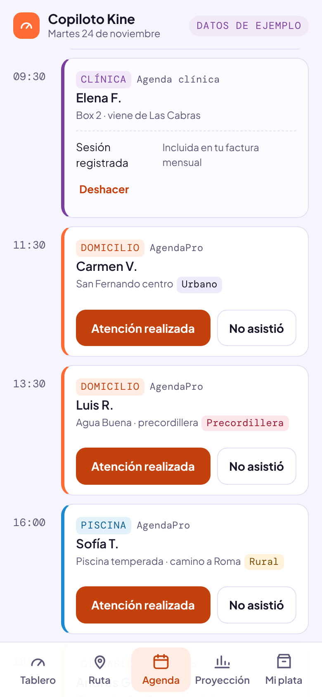
01
8:15 · la agenda ya está
Las 3 sesiones de la clínica y las 4 particulares llegaron solas desde AgendaPro y la agenda de InMotion.
Cualidad (testeo)el registro de un toque (ciclos 1 y 2).
Mejora incorporadaAgendaPro y agenda clínica (RF3).
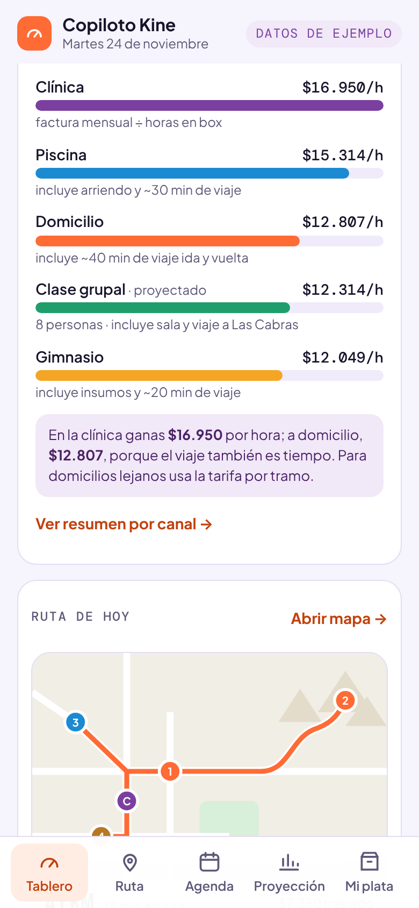
02
10:05 · ¿qué me conviene?
Entre pacientes ve qué canal rinde más por hora: el domicilio pierde por el viaje.
Cualidad (testeo)tablero legible de un vistazo.
Mejora incorporadaganancia por hora por canal (RF5).
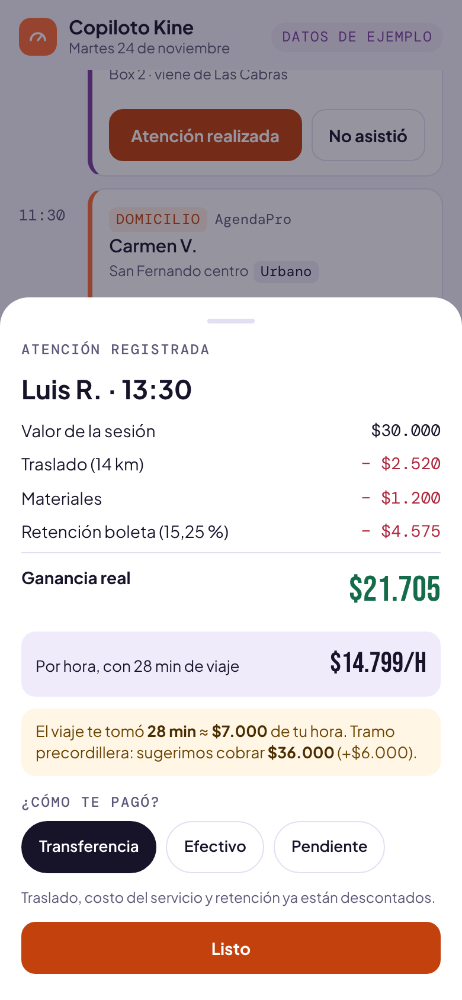
03
13:30 · Agua Buena
Termina con don Luis en la precordillera: el viaje le costó 28 min de su hora y la app sugiere cobrar el tramo.
Cualidad (testeo)desglose de la ganancia.
Mejora incorporadatiempo de viaje y tarifa por tramo (RF6, Ariel).
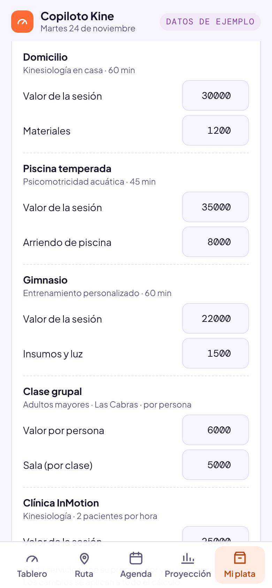
04
16:00 · piscina temperada
Antes de la psicomotricidad acuática, el arriendo de la piscina ya está en el cálculo.
Cualidad (testeo)costos editables (ciclo 1).
Mejora incorporadaservicios con su propio costo (RF7).
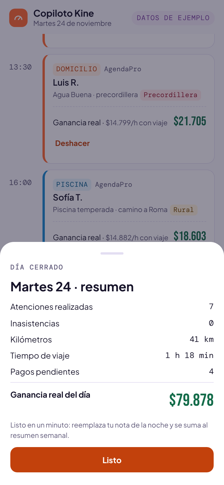
05
20:10 · día cerrado
Cierra con un resumen de atenciones, km, viaje y pagos pendientes. Ya no anota de noche.
Cualidad (testeo)cierre en toques (P4).
Mejora incorporadareemplaza el registro nocturno (RF2) y el medio de pago.
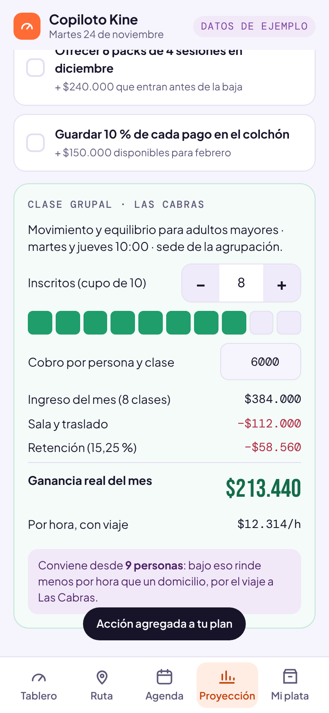
06
Fin de mes · Las Cabras
Con el resumen por canal, arma la clase grupal para adultos mayores y ve desde cuántas personas conviene.
Cualidad (testeo)proyección con acciones.
Mejora incorporadareporte exportable y clase grupal (RF10).
Qué cambió en la secuencia. El día ya no transcurre entre Rancagua y Machalí con clínica y domicilio: empieza en InMotion, sube a Agua Buena, pasa por la piscina temperada y termina en el gimnasio. Cada escena muestra la cualidad que se conserva y la mejora que trajo el ciclo 3.
Iteración · versión 3
3.1.3.3Mock-up iterado (v3) y ajustes fundamentados
→
Tablero · v2 → v3
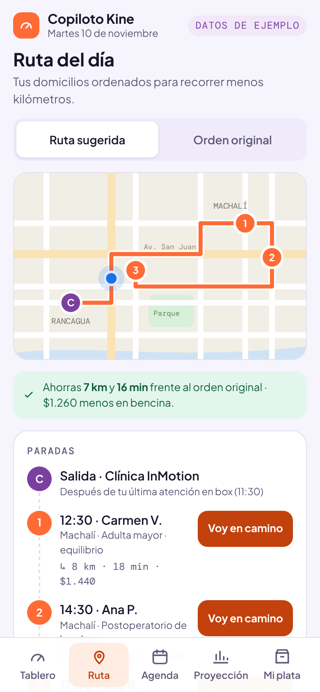
→
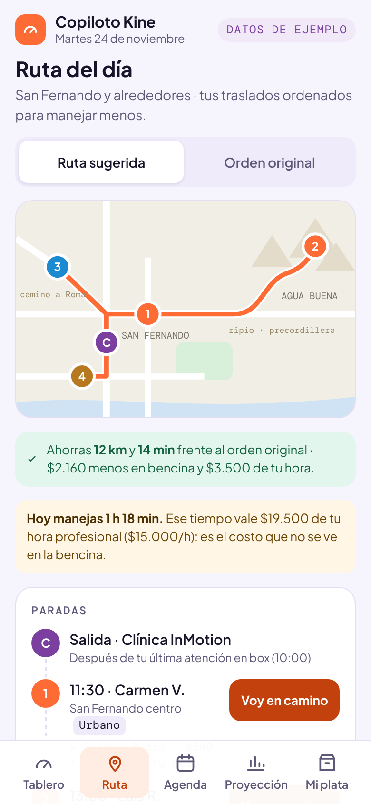
Ruta · v2 → v3
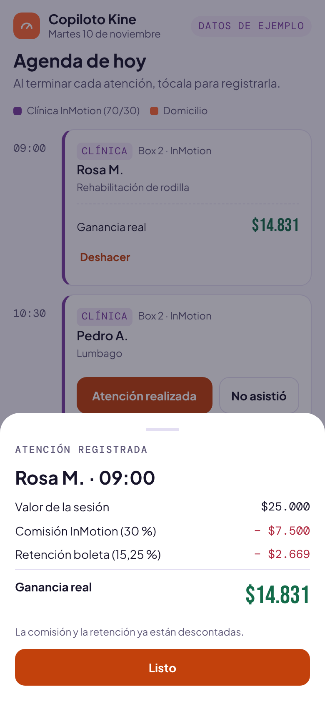
→
Atención · v2 → v3
#
Cambio en v3
Hallazgo
Req. / atributo
Estado
1
Agenda desde AgendaPro y agenda de la clínica, con el origen visible en cada cita
RF3 · CDM 3
R1 · R2 · Conectado
Simulado en el prototipo
2
Ganancia por hora por canal en el tablero, ordenada de mayor a menor
RF5 · CDM 3
R4 · Claro
Funcional
3
Tiempo de viaje como costo de la hora profesional (valor editable)
RF6 · Ariel 19:45
R8 · Justo con su tiempo
Funcional
4
Tarifa sugerida por tramo: urbano, rural y precordillera
RF6 · RF9
R8 · Justo con su tiempo
Funcional
5
Modo clínica por factura mensual (o por atención 70/30)
RF4
R3
Funcional
6
Servicios configurables con su propio costo: domicilio, piscina, gimnasio, grupal y clínica
RF7
R3 · R8
Funcional
7
Clase grupal en Las Cabras: cupos, cobro por persona y punto de equilibrio
RF10 · propuesta grupal
R11 · Anticipador
Funcional
8
Resumen semanal y mensual por canal, exportable a Excel o Google Sheets
Mabel 18:23 · Ariel 10:47
R4 · R12
Funcional
9
Ruta y ejemplos en su territorio: San Fernando, Agua Buena, camino a Roma
RF8
R9
Funcional (mapa ilustrativo)
10
Medio de pago y estado en cada atención
Planilla de otro equipo
R7 · R12
Funcional
11
Cierre del día con resumen (km, tiempo, pagos pendientes)
RF2
R6
Funcional
12
Motivo de consulta fuera de la agenda (dato de salud)
Brecha B6 · ciclo 2
R13
Funcional
Fundamento. Ningún cambio sale de una preferencia del equipo: todos responden a una cita de la clienta o a una sugerencia de Sercotec y los docentes (columna “Hallazgo”). La agenda queda simulada porque la conexión real con AgendaPro es parte del MVP. Pruébalo: copiloto-kine.vercel.app/profesional/.
Iteración · versión 3
3.1.3.3Lo nuevo de la v3, pantalla por pantalla
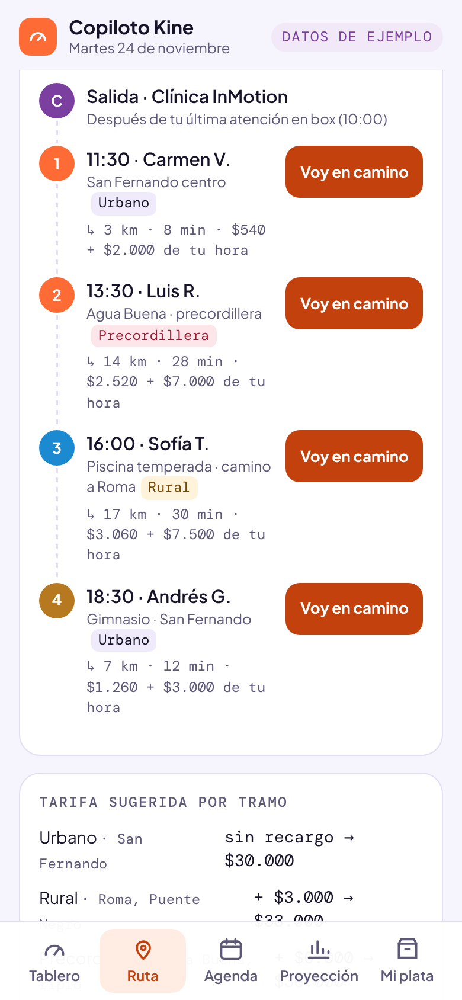
Ruta · tramos
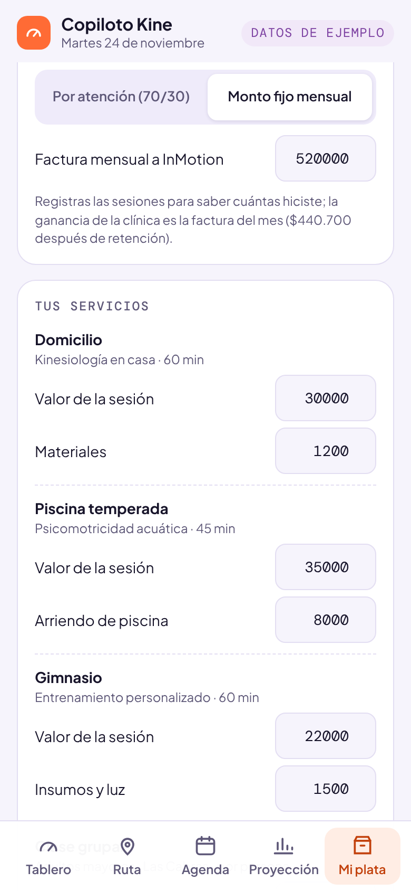
Clínica · facturaServiciosClase grupal
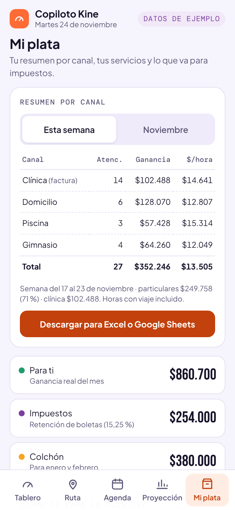
Resumen por canalCierre del día
Pantalla
Qué materializa
Atributo
Ruta · tramos
Cada parada muestra km, minutos, costo en bencina y valor del tiempo; tarifa sugerida por tramo urbano, rural y precordillera.
Justo con su tiempo
Clínica · factura
Elige si la clínica le paga por atención (70/30) o con un monto fijo mensual; la sesión se registra igual para contarla.
Conectado y corregible
Servicios
Valor y costo propio de domicilio, piscina (arriendo), gimnasio (insumos), grupal (sala) y clínica.
Claro
Clase grupal
Inscritos, cobro por persona, ganancia del mes y desde cuántas personas rinde más que un domicilio.
Anticipador
Resumen por canal
Semana y mes: atenciones, ganancia y ganancia por hora; descarga para Excel o Google Sheets.
Claro
Cierre del día
Atenciones, inasistencias, km, tiempo de viaje y pagos pendientes: reemplaza la nota nocturna.
Conectado y corregible
Iteración · versión 3
Verificación del prototipo v3
11/11
tareas base: lo de v1 y v2 sigue funcionando
10/10
tareas nuevas, una por cambio del ciclo 3
5/5
cálculos idénticos a la referencia
0 · 0
errores WCAG AA · botones bajo 44 px
Regresión (T1–T11). Las 11 tareas de los ciclos 1 y 2 se repiten sobre la v3 y pasan todas: ganancia del mes visible sin tocar nada, registro en 2 toques, deshacer, inasistencia, ruta y aviso, comparación de rutas, proyección, impuestos, costos editables y exportación.
Ver cuánto le cuesta en tiempo el domicilio de Agua Buena y qué cobrar
✔
2
El viaje te tomó 28 min ≈ $7.000 de tu hora. Tramo precordillera: sugerimos co…
N4
RF4 · cambio 4
Registrar la clínica como monto fijo mensual
✔
3
Ya activo por defecto · En modo factura, la clínica suma su monto fijo del mes…
N5
RF7 · cambio 5
Cambiar el valor de la sesión en piscina
✔
4
Piscina a $38.000 → Ganancia real$21.145
N6
RF10 · cambio 6
Armar una clase grupal y saber desde cuántas personas conviene
✔
3
Con 9 personas rinde igual o más por hora que un domicilio (desde 9 conviene).…
N7
Mabel · Ariel · cambio 7
Ver el resumen del mes por canal y descargarlo para Excel
✔
3
Noviembre al día 23 · particulares $786.683 (64 %) · clínica $440.700. Horas c…
N8
RF8 · cambio 8
Reconocer su territorio en la ruta
✔
1
San Fernando · Agua Buena · camino a Roma · Hoy manejas 1 h 18 min. Ese tiempo…
N9
Planilla de otro equipo
Registrar el medio de pago de una atención
✔
4
Etiqueta en agenda: sí
N10
RF2
Cerrar el día completo con resumen (reemplaza la nota de la noche)
✔
16
Atenciones realizadas 7 · Inasistencias 0 · Kilómetros 41 km · Tiempo de viaje…
Cálculos contra la referencia
Atención
Ganancia app
Referencia
Por hora
Valor del viaje
OK
a4
$23.685
$23.685
$20.899/h
$2.000
✔
a5
$21.705
$21.705
$14.799/h
$7.000
✔
a6
$18.603
$18.603
$14.882/h
$7.500
✔
a7
$15.885
$15.885
$13.238/h
$3.000
✔
a2 (clínica por atención)
$14.831
$14.831
—
—
✔
Referencia. Ganancia = valor − km × $180 − costo del servicio − valor × 15,25 %; por hora = ganancia ÷ (duración + minutos de viaje); valor del viaje = minutos ÷ 60 × $15.000. Script reproducible: iteracion-v3/verificar_v3.js. Es una verificación interna antes de llevar la v3 a la usuaria: confirma que nada se rompió y que lo nuevo calcula bien, pero no reemplaza el ciclo 4.
Iteración · versión 3
3.1.3.4Ficha del testeo de la iteración · ciclo 4
Instrumento
3.1.3.4 Ficha de planificación del testeo de la iteración
Foco
Uso real y decisión
Prototipo
v3 en el celular de la usuaria
Plantilla
Anexo A
Validar con la usuaria real (Josselyn) y una par (Catalina) que el prototipo v3 resuelve su día de trabajo en sus cuatro canales y su territorio, que la ganancia por hora le ayuda a decidir y que el precio piloto es aceptable, usando su propio celular.
Objetivo específico
Participantes
Prototipo
Actividades
Roles
Indicador
Pregunta
Procesamiento
Lugar · tiempo
Comprobar que reconoce su día en la app
Josselyn Toledo (usuaria)
Prototipo v3 en su celular
Recorrido libre + tareas N1, N3, N8 (agenda, viaje a Agua Buena, ruta)
Mod.: Claudia · Reg.: Francisco
“Así es mi día” sin explicación; ≤ 3 toques por tarea
¿Qué cambiaría para que fuera su día real?
Pauta de observación + tiempos
Su consulta o domicilio 25 min
Medir si la ganancia por hora cambia una decisión
Josselyn
Prototipo v3 · tablero y tramos
Tareas N2 y N3 + pregunta de decisión
Mod.: Claudia
Nombra una decisión concreta (precio, tramo o canal)
¿Qué haría distinto con este dato?
Codificación de respuestas (sí/no + qué)
Su consulta 10 min
Verificar factura de clínica y servicios
Josselyn
Mi plata: factura, servicios, resumen
Tareas N4, N5 y N7 con sus valores reales
Ejec.: Néstor
Ingresa su factura y 2 servicios sin ayuda
¿Los valores y el resumen calzan con lo que anota hoy?
Comparación con su registro nocturno
Su consulta 15 min
Validar la clase grupal y el precio
Josselyn · Catalina (par)
Proyección v3 + tabla de costos
Tarea N6 + preguntas de precio (H4) y de las otras propuestas
Mod.: Claudia · Reg.: Benjamín
Acepta piloto gratis y $9.990/mes después (o propone otro)
¿Pagaría por esto? ¿Cuánto? ¿La combinaría con una planilla?
Tabla de disposición a pagar
Presencial / Meet 10 min
Medir usabilidad percibida
Josselyn · Catalina
Prototipo v3
Cuestionario SUS al final
Reg.: Francisco
SUS ≥ 75
10 afirmaciones SUS
Puntaje SUS (0–100)
Presencial / Meet 5 min
Qué cambia respecto del ciclo 2. El ciclo 2 fue técnico e interno; el ciclo 4 es con la usuaria real y una par, en su propio celular, con las tareas nuevas N1–N10, una pregunta de decisión (¿qué haría distinto con la ganancia por hora?), la escala SUS y la disposición a pagar. Se suma al guion A del kit de testeo. Resultados pendientes de sesión.
Iteración · versión 3
3.1.5Costeo de la solución
Mabel pidió que “se pueda identificar más o menos cuánto saldría” (12:30) y el profesor, que fuera “de muy bajo costo… plataformas liberadas” (12:52). Este es el costeo del MVP con valores de referencia de noviembre de 2026.
Desarrollo
Ítem
Qué incluye
Costo
Nota
Diseño y desarrollo del MVP
4 integrantes × 60 h (UA4)
Aporte del equipo · valor de referencia $1.920.000 a $8.000/h
Proyecto académico: no se cobra a la clienta
Integraciones
Exportación de AgendaPro (Excel), API pública Bencina en Línea (CNE), OpenRouteService, enlace wa.me
$0
Planes gratuitos o servicios públicos
Dominio
copilotokine.cl en NIC Chile
≈ $10.900 al año
Opcional en el piloto
Operación mensual
Etapa
Servicios
Costo
Precio a la usuaria
Piloto (1 usuaria)
Hosting Vercel Hobby · base de datos Supabase Free · mapas y bencina gratis · wa.me
≈ $900 al mes (solo dominio)
Gratis para Josselyn por 3 meses
Comercial (desde 5 usuarias)
Vercel Pro (US$20) · Supabase Pro (US$25) · WhatsApp Business API por conversación
≈ $48.000 al mes
$9.990 al mes por usuaria (precio a validar, H4)
Frente a sus alternativas
Opción
Costo directo
Costo real
Seguir anotando de noche o en Excel
$0 en software
~1 h diaria ≈ 22 h al mes ≈ $330.000 de su hora ($15.000/h)
Planilla Excel (otras propuestas)
$0 + computador y Excel
Hay que alimentarla a mano (Mabel, 15:12)
Copiloto Kine
Piloto $0 · luego $9.990/mes
Cierre del día en un minuto; datos exportables a la misma planilla
Decisión de precio. La EV2 usaba $20–25 mil al mes como referencia del mercado. El ciclo 3 mostró que la solución debe ser de bajo costo (Ariel) y que en la región lo especializado se valora poco (RF9). Proponemos un piloto gratis de 3 meses y $9.990 al mes después: con 5 usuarias se cubre la operación comercial. Es una hipótesis (H4) que se valida en el ciclo 4. Precios de lista de Vercel, Supabase y NIC Chile a $950 por dólar.
Validación y propuesta de valor
Validación con usuarios externos
Quien usa la app y quien vive sus efectos.
Para validar con usuarios externos preparamos un kit de testeo (20 páginas) para tres públicos: las kinesiólogas, que usan la app; los
pacientes, que reciben sus mensajes y de quienes depende la ruta; y una contadora, que recibe el resumen mensual.
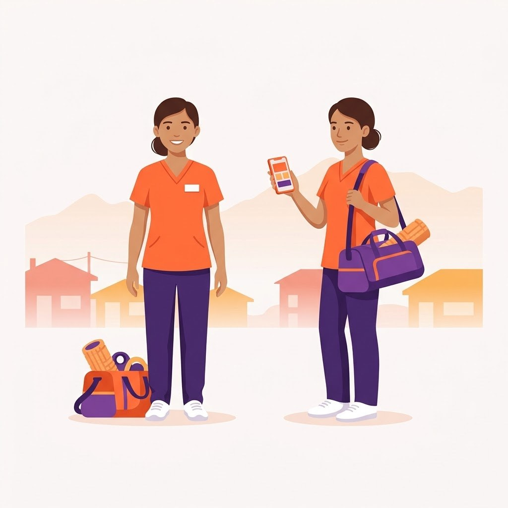
JosselynUsuaria principal · kinesióloga
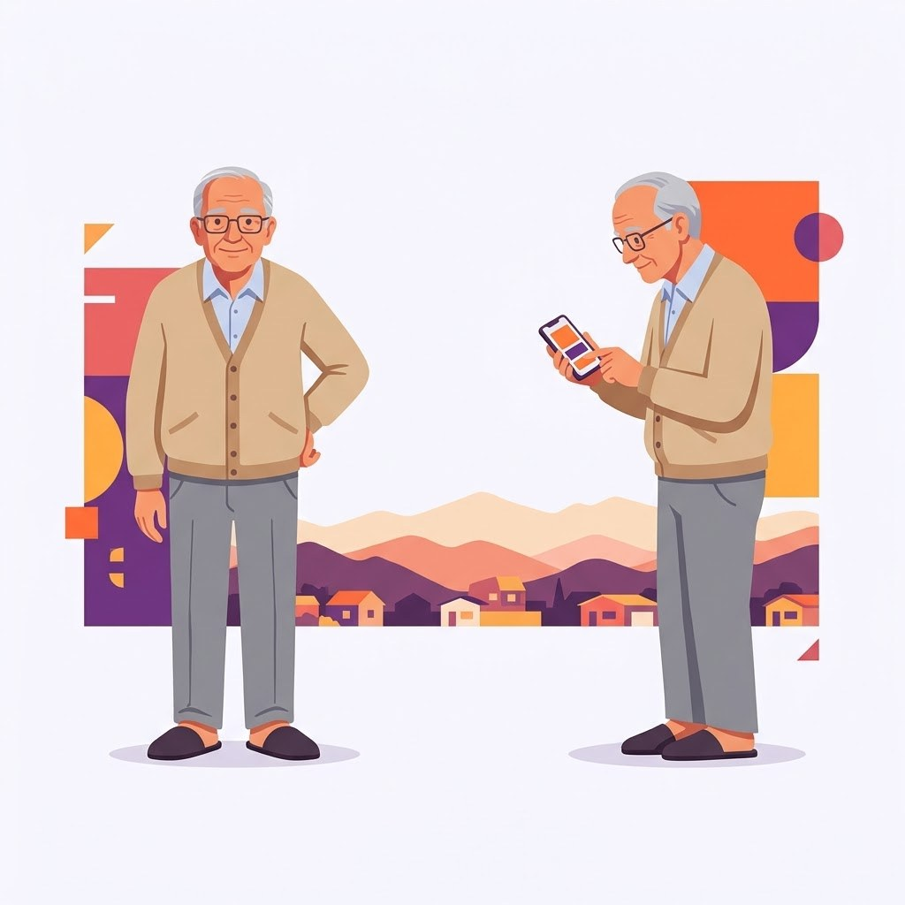
Don LuisPaciente · adulto mayor a domicilioCamilaPaciente · estudiante con dolor de espaldaOtros perfilesCuidadora, oficina, turnos y deportista
K1
Josselyn Toledo · Kinesióloga independiente · usuaria del caso
Prototipo Kine completo (tareas T1–T11) · Presencial con su celular · 60 min
Exportación CSV + vista “Mi plata” · Remota · 20 min
P1
“Don Luis” · Adulto mayor atendido a domicilio
Vista paciente v2: M1, M2, M3 y M4 · Presencial, idealmente en su casa · 15 min
P2
“Marcela” · Cuidadora familiar
Vista paciente: M1, M2 y M3 · Presencial o remota · 15 min
P3
“Camila” · Estudiante con dolor de espalda
Vista paciente: M1, M3 y M5 · Presencial en INACAP · 15 min
P4
“Rodrigo” · Trabajador de oficina o teletrabajo
Vista paciente: M1 y M3 · Remota o presencial · 15 min
P5
“Luis” · Trabajador por turnos (minería o industria)
Vista paciente: M1 y M5 · Presencial o remota · 15 min
P6
“Valentina” · Deportista amateur
Vista paciente: M1, M2 y M5 · Presencial · 15 min
Hipótesis y criterios de éxito
#
Público
Hipótesis
Éxito si…
Resultado
H1
Kinesióloga
Cierra el día en menos de 30 minutos (meta del desafío).
≤ 5 min sin digitar
Pendiente
H2
Kinesióloga
Entiende “ganancia real” sin explicación.
2 de 2 kinesiólogas
Pendiente
H3
Kinesióloga · contadora
Confía en el cálculo de comisión, traslado y retención.
≥ 4 y sin errores
Pendiente
H4
Kinesióloga
Pagaría una suscripción mensual por la herramienta.
Rango que incluya ≤ $25.000
Pendiente
H5
Pacientes a domicilio
Aceptan una ventana de llegada de 30 min para que la kine ordene su ruta.
≥ 70 % confirma la ventana
Pendiente
H6
Pacientes
El aviso “voy en camino” se entiende y da tranquilidad.
≥ 80 % entiende · ≥ 4
Pendiente
H7
Pacientes
El comprobante sin diagnóstico les sirve (incluido reembolso).
≥ 80 % lo considera suficiente
Pendiente
H8
Adulto mayor
Lee y responde el recordatorio solo o con letra grande.
≥ 2 de 3 participantes
Pendiente
H9
Contadora
El resumen exportado alcanza para la declaración mensual y anual.
Sin campos faltantes críticos
Pendiente
H10
Pacientes
Una hora liberada a precio preferente les interesa y no se siente invasiva.
≥ 50 % la tomaría · 0 la percibe como spam
Pendiente
H11
Adultos mayores
Una clase grupal de movimiento cercana les interesa (con acompañante).
≥ 50 % se inscribiría
Pendiente
Validación y propuesta de valor
Vista paciente · versión actual
Lo que recibe el paciente cuando su kine usa Copiloto Kine.
Las kinesiólogas usan la app; los pacientes solo reciben sus mensajes. La versión actual de la vista paciente simula cuatro mensajes de WhatsApp. Tras la reunión del 12/11 se itera a una versión simplificada para personas mayores (página siguiente).
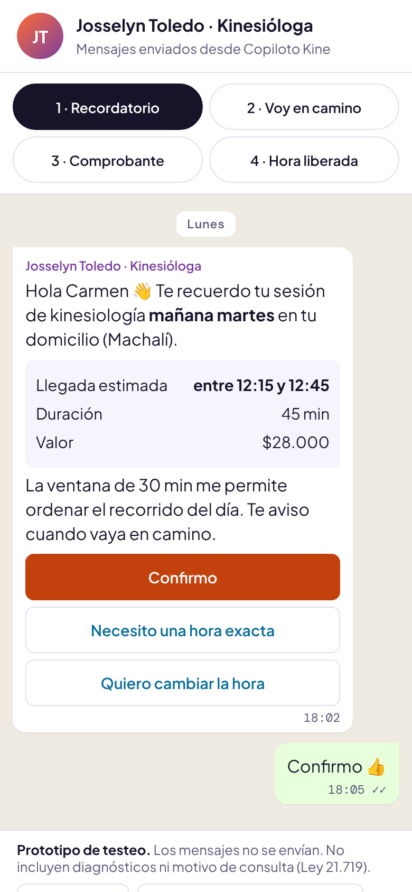
v1 · M1 Recordatorio
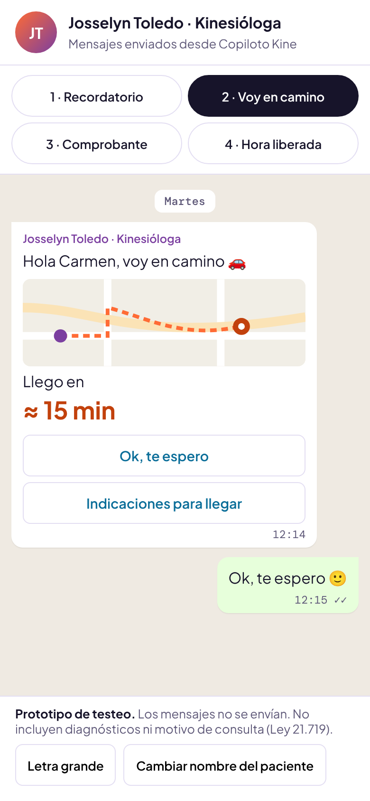
v1 · M2 Voy en camino
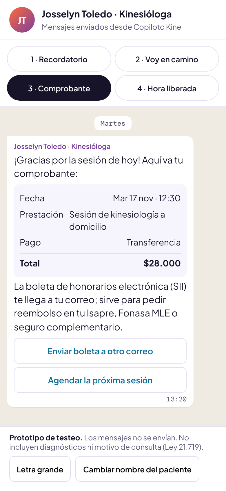
v1 · M3 Comprobante
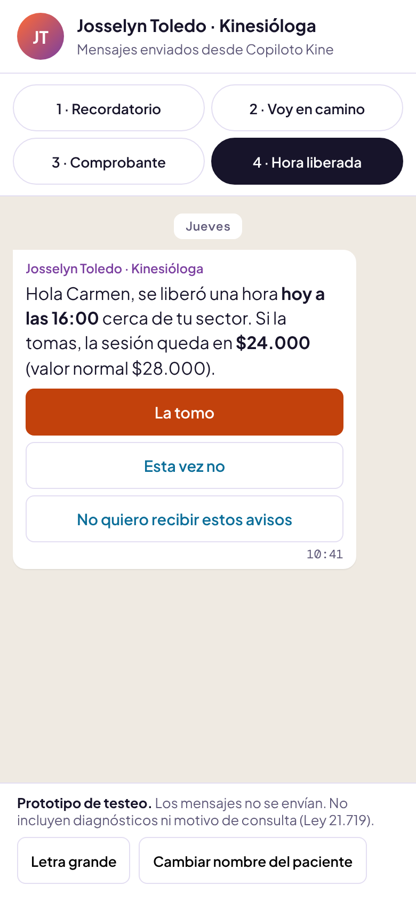
v1 · M4 Hora liberada
La hipótesis más riesgosa del modelo es H5: si los pacientes no aceptan una ventana de llegada de 30 minutos, la ruta sugerida no se puede aplicar. Por eso los pacientes son parte del testeo aunque no usen la app. Los mensajes no incluyen diagnósticos (Ley 21.719), la vista tiene “Letra grande” para adultos mayores y sus cuatro pantallas pasan la auditoría WCAG AA sin errores. Versión actualizada en ' + lnk(URL_CLI) + '.
Estado y siguientes pasos. La retroalimentación de la reunión del 12 de noviembre ya está integrada (sección anterior); con ella se ajustan el guion y el prototipo v3 antes de las sesiones. Los pacientes de Josselyn participan solo si ella los invita; se complementa con personas del entorno del equipo que calcen con cada perfil.
Contenido del kit de testeo
Documento
Para qué sirve
Plan e hipótesis
11 hipótesis con métrica y criterio de éxito definidos antes de testear
Perfiles
9 perfiles con criterios de reclutamiento y adaptaciones
Guiones A, B y C
Kinesiólogas (40–60 min), pacientes (15 min) y contadora (20 min)
Consentimiento informado
Participación voluntaria, sin datos de salud (Ley 21.719)
Pautas y cuestionarios
Observación de tareas, encuesta de pacientes y escala SUS
Matriz de consolidación
Regla de decisión por hipótesis: mantener, iterar o descartar
Validación y propuesta de valor
Vista paciente v2: simple para personas mayores
Un mensaje, una decisión.
Muchos pacientes de Josselyn son personas mayores atendidas a domicilio, como don Luis. La v2 simplifica el flujo y los componentes: cada mensaje pide una sola decisión, con letra y botones grandes, la hora exacta y ayuda siempre a mano. Además incorpora los hallazgos del 12/11.
M1 · Recordatorio
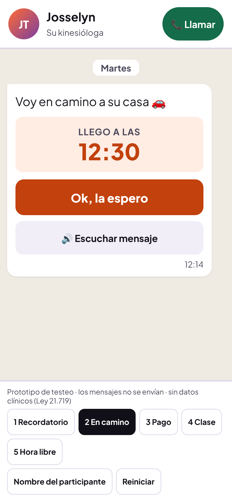
M2 · Voy en camino
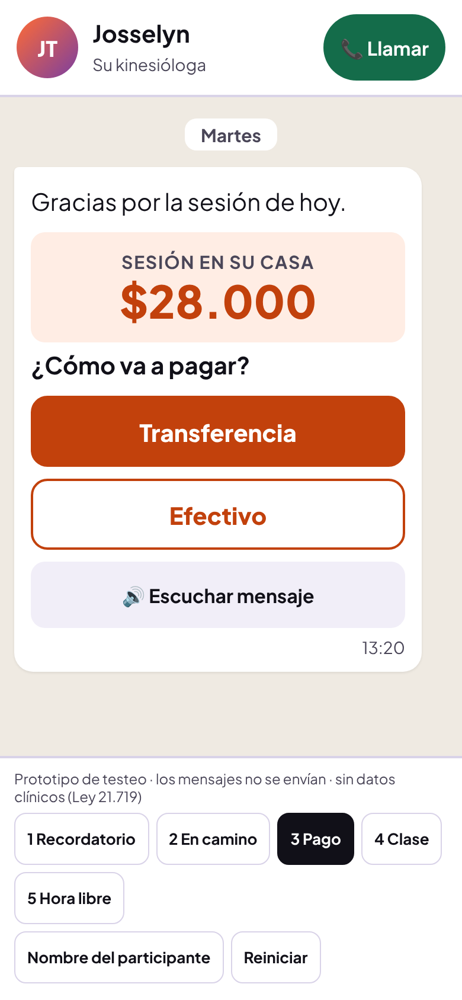
M3 · Pago y comprobante
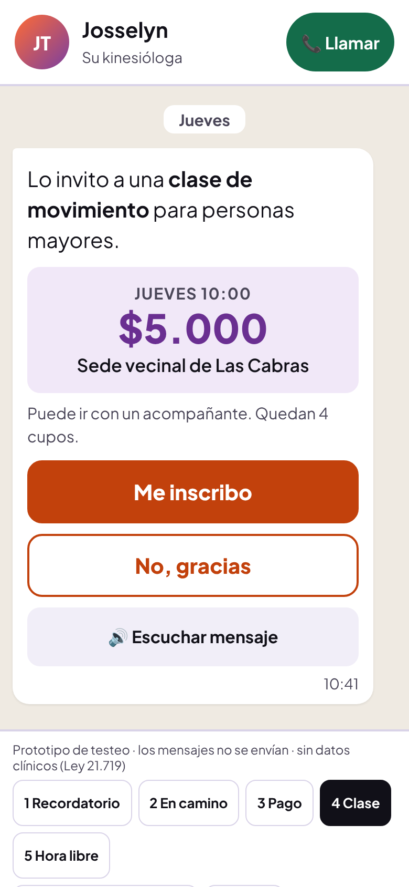
M4 · Clase grupal
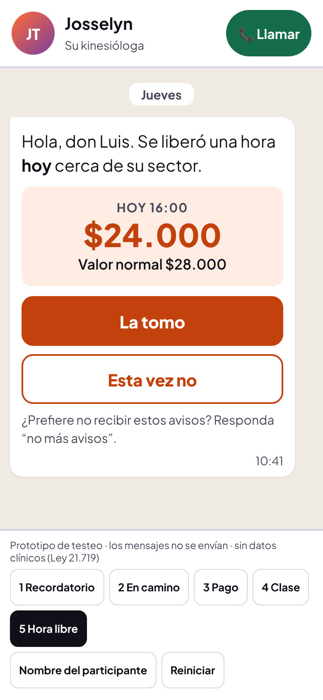
M5 · Hora liberada
Componente
Versión actual (v1)
Versión simplificada (v2)
Mensajes
Hasta 3 opciones y un mapa
Un mensaje = una acción; máximo 2 botones; al responder, las opciones desaparecen
Letra y botones
16 px; botones de 44 px
Letra de 20 px (mínimo 14 px); botones de 56–60 px a todo el ancho
Hora
“Entre 12:15 y 12:45” · “≈ 15 min”
“Llego cerca de las 12:30” · “Llego a las 12:30”: sin rangos ni cuentas
Lenguaje
Tuteo y frases largas
Trato de “usted”, frases cortas, saludo con su nombre
Ayuda
Botón “Letra grande” opcional
“Llamar a Josselyn” siempre visible y “Escuchar mensaje” en voz alta
Reagendar
Botón “Quiero cambiar la hora”
“Necesito otra hora” → Josselyn lo llama (sin formularios)
Pago
Solo comprobante
Elegir transferencia o efectivo en un toque; comprobante a la persona y a su familiar
Oferta
Hora liberada con descuento para todos
Personas mayores: invitación a clase grupal; pacientes activos: hora liberada
Hallazgos que se ven en el lado del paciente
Hallazgo
Cómo se refleja en los mensajes
RF10 · grupal preventivo para adultos mayores (Las Cabras)
M4: invitación a clase de movimiento, con lugar, día, valor y “puede ir con un acompañante”.
Planilla de otro equipo · medio de pago y estado
M3: el paciente elige transferencia o efectivo; el registro de Josselyn queda con el medio de pago.
Clientes con familia que coordina (perfil cuidadora)
M3: comprobante en copia a la hija o cuidadora; el familiar también puede confirmar.
RF6 · caminos rurales y tiempo de traslado
M2: hora de llegada exacta calculada con la ruta, en vez de minutos aproximados.
RF9 · el servicio especializado se valora poco
M3: el monto se muestra junto a “sesión en su casa”, para dar cuenta del servicio a domicilio.
RF11 · pacientes que manejan sus tiempos
M5: la hora liberada se ofrece solo a pacientes activos (estudiantes, trabajadores, deportistas).
Ariel / Mabel · simple y de bajo costo
Todo ocurre en WhatsApp: el paciente no instala nada ni crea cuentas.
Verificación. Las cinco pantallas pasan WCAG 2.1 AA sin errores, todos los botones miden 56 px o más y la letra mínima es de 14 px. Pruébalo: copiloto-kine.vercel.app/cliente/ (v1 en el repositorio: vista-paciente-v1.html).
Validación y propuesta de valor
Storyboard del paciente
Cada escena del paciente es una hipótesis.
El storyboard del paciente construido en la EV2 —con don Luis, adulto mayor atendido a domicilio, y Camila, estudiante con dolor de espalda— se convierte en el guion del testeo con pacientes: cada escena tiene un mensaje de la vista paciente y una hipótesis que validar.
01
Camila reserva en un minuto
Mensaje / prototipoAgenda en línea que Josselyn ya usa
Hipótesis—
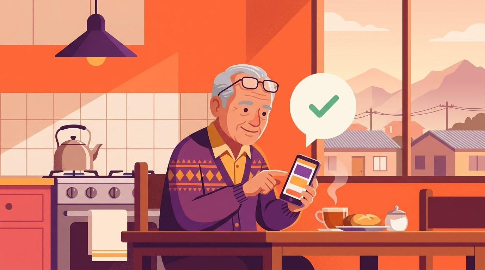
02
Don Luis confirma el recordatorio
Mensaje / prototipoM1 · ventana de llegada de 30 min
HipótesisH5 · H8
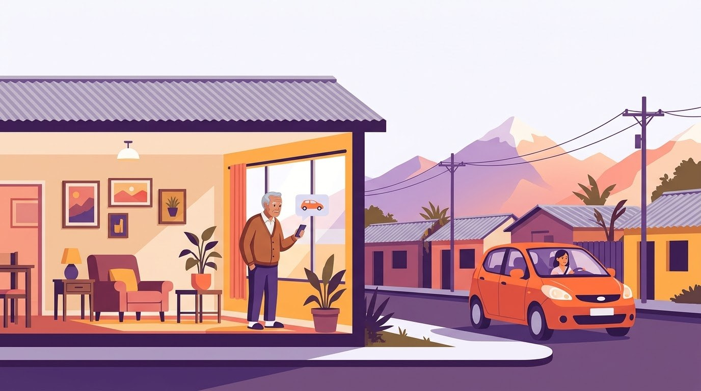
03
“Voy en camino”
Mensaje / prototipoM2 · aviso con tiempo estimado
HipótesisH6
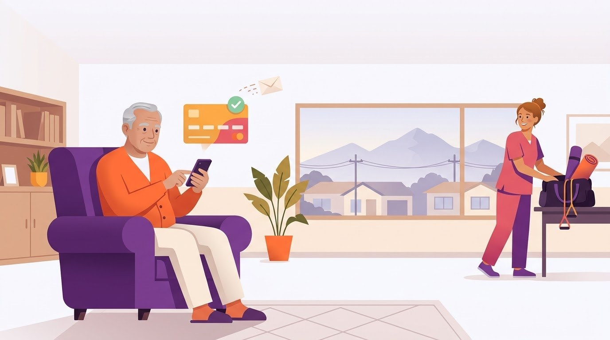
04
Paga y recibe el comprobante
Mensaje / prototipoM3 · comprobante sin diagnóstico
HipótesisH7
05
Camila toma un cupo liberado
Mensaje / prototipoM5 · hora liberada a precio preferente
HipótesisH10
06
Seguimiento después del alta
Mensaje / prototipoFase 2 · pack de mantención o clase grupal (M4)
HipótesisH11
Lectura. Las escenas 2 a 5 ya están prototipadas (mensajes M1 a M4). La reserva en línea (escena 1) depende de la agenda que Josselyn ya usa, y el seguimiento después del alta (escena 6) queda para la fase 2.
Propuesta de valor iterada (v3) · 3.1.5
EL COPILOTO DE SU TERRENO.
Toma sus agendas, ordena su ruta y convierte cada atención —en clínica, a domicilio, en piscina o en el gimnasio— en ganancia real y por hora, contando también el tiempo de viaje.
AnticipadorClaroConectado y corregibleJusto con su tiempo
Propuesta de valor iteradaSemana 14
Validación y propuesta de valor
3.1.5Propuesta de valor iterada: EV2 → v2 → v3
De copiloto financiero a copiloto de su día.
Antes · EV2
Copiloto Kine es el copiloto financiero de la kinesióloga independiente: se conecta a la agenda que ya usa y convierte cada atención en ganancia real —descontando traslado, materiales, comisión e impuestos— para que sepa cuánto gana, anticipe los meses bajos y deje de cuadrar Excel de noche.
Iteración v2 · ciclos 1 y 2
Copiloto Kine es el copiloto de la kinesióloga independiente: ordena su ruta de domicilios y convierte cada atención en ganancia real —con comisión, traslado, materiales e impuestos ya descontados— para que sepa cuánto gana, anticipe los meses bajos y entregue sus números a la contadora sin pasar nada a Excel.
Versión 3 · ciclo 3 con la clienta
Copiloto Kine es el copiloto de la kinesióloga independiente que trabaja en varios lugares: toma las citas de AgendaPro y de la clínica, ordena su ruta y convierte cada atención —en clínica, a domicilio, en piscina o en el gimnasio— en ganancia real y ganancia por hora, contando también el tiempo de viaje, para que decida dónde le conviene atender, cobre lo justo por cada tramo y prepare los meses bajos sin anotar nada de noche.
Qué cambió de la v2 a la v3 y por qué
Cambio
Evidencia que lo respalda
“Toma las citas de AgendaPro y de la clínica”
RF3: usa AgendaPro y una agenda médica; Google Calendar queda como alternativa.
“En clínica, a domicilio, en piscina o en el gimnasio”
RF7: es psicomotricista acuática y hace entrenamiento personalizado.
“Ganancia por hora… contando el tiempo de viaje”
RF5 y RF6: quiere saber qué canal rinde más; Agua Buena le toma 25–30 min (Ariel: la hora hombre es un costo oculto).
“Cobre lo justo por cada tramo”
RF6 y RF9: caminos de precordillera y un mercado que no valora lo especializado.
“Sin anotar nada de noche”
RF2: hoy anota todo cada noche en el teléfono.
Qué cambió de la EV2 a la v2
Cambio
Evidencia que lo respalda
La ruta pasa al centro (“ordena su ruta de domicilios”)
Ciclo 1: la ruta fue la vista con más valor percibido; ciclo 2: 7 km menos por día (P8).
Sale “se conecta a la agenda que ya usa”
Ciclo 2: la integración es simulada (R2, brecha B1). No prometemos lo que el MVP aún no cumple.
Entra “entrega sus números a la contadora sin Excel”
Ciclo 2: exportación verificada sin diagnósticos ni nombres (P6) y retención configurable (P11).
“Ya descontados” en vez de “descontando”
Ciclo 2: cálculo exacto en 5 de 5 atenciones (P1); el usuario no hace la cuenta.
Métricas claves para la Unidad 4
Métrica
Hoy (prototipo)
Meta MVP
Tiempo de cierre del día
Resumen en 16 toques para 7 atenciones (N10)
< 30 min/día real (desafío)
Usabilidad (SUS)
Por medir en el ciclo 4
≥ 75
Decisiones tomadas con la ganancia por hora
Por medir en el ciclo 4
≥ 1 decisión concreta por usuaria
Pacientes que aceptan la ventana de llegada
Por medir (H5)
≥ 70 %
Km ahorrados por día con domicilios
7 km (día de ejemplo)
Medido con rutas reales
Estado del arte y pertinencia
3.1.4.1Matriz PESTAL profundizada
El contexto de la UA1, ahora con evidencia.
Instrumento 3.1.4.1 · base: PESTAL de la UA1 (1.1.3.1) · profundizado con la evidencia de los ciclos 1 y 2 · plantilla oficial en el Anexo A. Desafío: ¿Cómo podríamos aumentar la visibilidad financiera de kinesiólogas independientes con atención mixta, conectando su agenda con sus ingresos y costos, para reducir a la mitad el tiempo de registro manual (de ~1 h a menos de 30 min diarios) en Rancagua durante 2027?
Factor
Factor profundizado
Oportunidad
Amenaza
PolíticoOriginal: Agenda pública de formalización de trabajadores independientes y transformación digital del Estado.
La formalización avanza con el calendario de la Ley 21.133 y con programas públicos de digitalización de pymes (Ministerio de Economía, Sercotec).
Postular el proyecto a fondos de digitalización y emprendimiento en la UA4; el testeo muestra un producto concreto y medible.
Dependencia de fondos concursables para el desarrollo inicial; plazos de postulación acotados.
EconómicoOriginal: Ingresos variables por estacionalidad; costos de traslado y combustible en atención a domicilio.
El ciclo 1 mostró que el costo de traslado es visible y configurable ($180/km); el ciclo 2, que cambia la ganancia de cada domicilio en $160 por cada $20 de alza por km.
Las acciones de la proyección (packs, grupo, colchón) suman $570.000 para cubrir enero y febrero: la herramienta genera ingreso, no solo lo registra.
Alzas de combustible reducen la ganancia por domicilio; el precio de la suscripción debe mantenerse bajo $25.000 (rango del mercado, UA1).
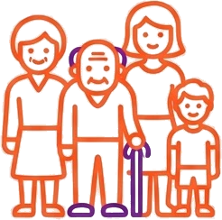
SocialOriginal: Envejecimiento de la población y mayor demanda de rehabilitación y atención domiciliaria.
La atención a domicilio de adultos mayores es parte de la agenda tipo del prototipo; el aviso “voy en camino” responde a un paciente que espera en casa.
El trato 1:1 se protege: la app libera tiempo administrativo y comunica la llegada sin que Josselyn escriba mientras maneja.
Brecha digital: usuarias poco habituadas a apps; el ciclo 1 exigió letra mínima de 12 px y contraste AA.
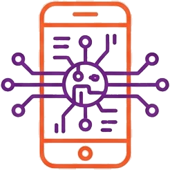
TecnológicoOriginal: Adopción masiva de WhatsApp, agendas online (Cal.com, AgendaPro) y boleta de honorarios electrónica del SII.
El prototipo funciona en el navegador del celular (39 KB) y sin fuentes web; las integraciones reales (agenda, mapas, WhatsApp) son brechas B1, B4 y B5.
Enlaces wa.me y APIs de calendario permiten integrar sin costo de licencia en el MVP.
Datos guardados solo en el dispositivo (B2): riesgo de pérdida al cambiar de celular.
AmbientalOriginal: Traslados en vehículo propio entre domicilios; registros en papel.
La ruta sugerida recorre 7 km menos que el orden original en el día de ejemplo (20 vs. 27 km, −26 %).
Con 20 días de domicilios al mes son ~140 km menos: cerca de 10 litros de bencina y unos 23 kg de CO2 (estimación del equipo con 14 km/l y 2,3 kg CO2/l).
El ahorro depende de que la usuaria pueda reordenar citas; algunos pacientes tienen horario fijo.
LegalOriginal: Ley 21.133 (retención gradual hasta 17 % en 2028), Ley 20.584 sobre ficha clínica y Ley 21.719 de protección de datos (vigencia desde diciembre de 2026).
La retención 2026 es 15,25 % y sube a 16 % en 2027; la Ley 21.719 rige desde el 1 de diciembre de 2026, con los datos de salud como datos sensibles.
Tasa de retención configurable (P11) y exportación sin datos clínicos (P6) como ventaja de cumplimiento.
La agenda muestra el motivo de consulta (B6): debe ocultarse antes de usar datos reales.
Estado del arte y pertinencia
3.1.4Estado del arte y tendencias
Nadie cruza agenda, costos por atención e impuestos chilenos.
Relación con el desafío. El mercado ofrece agendas (AgendaPro, Encuadrado, Cal.com) y contabilidad (Nubox), pero nadie conecta la cita con lo que realmente queda después de comisión, traslado y retención. Ese cruce es justamente lo que el desafío pide.
Solución
Agenda online
Ganancia neta por atención
Costos de domicilio
Retención / impuestos
Ruta de domicilios
Proyección
Foco independiente
Ganancia por hora por canal
AgendaPro
●
◐
○
○
○
○
◐
○
Encuadrado
●
◐
○
◐
○
○
●
○
Reservo
●
◐
○
○
○
○
◐
○
Medilink
●
◐
○
◐
○
○
○
○
Cal.com
●
○
○
○
○
○
●
○
Cliniko
●
◐
○
○
○
○
◐
○
Jane App
●
◐
○
○
○
○
◐
○
Nubox
○
◐
◐
●
○
○
○
○
Copiloto Kine (v2)
◐
●
●
●
◐
◐
●
○
Copiloto Kine (v3)
◐
●
●
●
◐
◐
●
●
● cubre · ◐ parcial · ○ no cubre. Antecedentes revisados en la UA1 en sus sitios oficiales. Copiloto Kine se evalúa por lo que hace hoy: agenda y ruta simuladas = ◐. La v3 suma la ganancia por hora por canal (ciclo 3).
Tendencias de la especialidad
Tendencia
Qué está pasando
Cómo responde Copiloto Kine
Finanzas embebidas en software vertical
Las herramientas de gestión incorporan cobros, impuestos y reportes dentro del mismo flujo de trabajo.
La ganancia, la retención y el colchón se calculan al registrar la atención, no en otra app.
Herramientas para profesionales independientes
Crece el software pensado para una persona que trabaja sola, no para centros.
Diseñado para una kinesióloga con atención mixta; Cal.com y Encuadrado confirman la tendencia.
Atención domiciliaria y envejecimiento
La demanda de rehabilitación en casa aumenta con la población mayor.
La ruta del día y el aviso “voy en camino” se volvieron centrales tras el ciclo 1.
Automatización y asistencia con IA
Las apps reducen la digitación: el dato se captura en el momento en que ocurre.
Registro de un toque; la siguiente etapa es leer la agenda real y proyectar desde el historial.
Privacidad por diseño en salud
Normas como la Ley 21.719 exigen minimizar y proteger los datos sensibles.
Exportación sin diagnósticos (P6); el motivo de consulta se ocultará (B6).
Accesibilidad e inclusión
Las pautas WCAG 2.1/2.2 son hoy el estándar mínimo de calidad en productos digitales.
v2 sin errores WCAG AA, botones de 44 px y letra mínima de 12 px.
Profesionales multicanal
Cada vez más independientes combinan clínica, domicilio y servicios propios con costos distintos.
v3: cinco canales configurables y ganancia por hora de cada uno (RF5, RF7).
Estado del arte y pertinencia
3.1.5Pertinencia de la propuesta de valor
Pertinente en lo que demuestra; abierta en lo que falta validar.
Dimensión
Lo que sabemos
Cómo responde la propuesta iterada
Problema de origen
Josselyn no sabe cuánto gana y registra todo cada noche (UA1, RF2).
Cierre del día con resumen en un minuto (N10) y ganancia real por atención.
Voz de la clienta (ciclo 3)
“Eso hago yo igual en el teléfono… simplemente no tengo esa aplicación” (36:25).
v3 se monta sobre su hábito: AgendaPro, factura de la clínica y sus 4 canales.
Estado del arte
Ningún antecedente cruza agenda, costos por atención, tiempo de viaje y retención chilena.
Copiloto Kine cubre esas variables y suma ganancia por hora por canal.
Otras propuestas
Dos se resuelven en Excel y una en un modelo grupal.
Lo que solo hace Copiloto Kine: la cita entra sola, ruta, tiempo de viaje y vista paciente; convive con las demás.
Viabilidad
Sercotec pide estimar el costo; el profesor, bajo costo y multi-dispositivo.
Piloto ≈ $900/mes con planes gratuitos; app web en teléfono, tablet y computador.
La propuesta es pertinente porque nace de la rutina real de la clienta (ciclo 3), se diferencia del estado del arte y de las otras tres propuestas, y es viable con un piloto casi sin costo. Quedan tres decisiones para el ciclo 4: precio, tarifa por tramo y alcance del módulo grupal.
Cierre
Enfoque sostenible
Sostenible es que la práctica pueda durar.
Económico Ec
+$570.000
Ganancia por hora por canal, tarifa por tramo y clase grupal con punto de equilibrio para los meses bajos. Retención configurable ante el alza de la Ley 21.133 (15,25 % → 16 % → 17 %).
Social So
~1 h → 1 min
Cierre del día con resumen, sin anotar de noche (RF2). Tiempo de viaje valorado: su hora profesional deja de ser invisible. Accesibilidad WCAG AA, letra grande para adultos mayores y datos de salud fuera del sistema (Ley 21.719).
Ambiental Am
−140 km/mes
Ruta sugerida: 20 vs. 27 km en el día de ejemplo (−26 %). Con 20 días de domicilios: ~10 l de bencina y ~23 kg de CO2 menos (estimación del equipo: 14 km/l, 2,3 kg CO2/l).
Sostenibilidad en el prototipo, no solo en el discurso
Decisión de diseño
Dimensión
Evidencia
Registro de un toque y corrección inmediata
SoEc
T2, T4, T10 · P3, P4, P7
Ruta agrupada por sector
AmEc
P8: −7 km y $1.260 por día
Colchón y acciones para meses bajos
Ec
T7: brecha de $770.000 → $530.000 con una acción
Exportación sin datos clínicos
So
P6
Prototipo liviano (39 KB)
AmSo
P9: funciona con datos móviles
Cierre
Gestión de la fase y bitácora
Cuatro semanas, cuatro roles, una bitácora.
Actividad
S11
S12
S13
S14
S15
SQA, storyboard y mock-up v1
Ciclo 1 (funcional y estético) y CDM 1
Iteración v2 y ciclo 2 (técnico)
Ciclo 3 · retroalimentación clienta y Sercotec (12/11)
◆
Transcripción, hallazgos y CDM 3
Iteración v3: metáfora, storyboard y mock-up
Verificación v3 (21 tareas, cálculos, AA)
Costeo y comparativa de propuestas
Ciclo 4 · sesión con Josselyn y Catalina
Presentación final
◆
Roles
Integrante
Rol
Claudia Cifuentes
Moderación de sesiones de testeo
Néstor Rivera
Prototipo y ejecución de tareas
Francisco Ahumada
Registro de observaciones y matrices CDM
Benjamín Vera Yáñez
Secretario técnico: consolidación, auditoría técnica y bitácora
Bitácora y evidencias
Bitácora de avance U3 (versión S13) completa con los seis indicadores: entregas/Bitacora_avance_U3_EV3.xlsx.
Ciclos: scripts y resultados JSON en ciclo1/, ciclo2/ e iteracion-v3/; transcripción del ciclo 3 en retroalimentacion/; kit de testeo en testeo/.
Aprendizaje de gestión. Las sesiones con usuarias externas deben agendarse desde la primera semana de la unidad. La reunión del 12/11 mostró que una sola conversación con la clienta cambia más el producto que dos ciclos internos: el ciclo 4 se agenda apenas se publique la v3.
Cierre
Conclusiones y próximos pasos
Probar con evidencia, iterar con criterio y llevarlo a las personas.
Aprendimos
Medir tareas, accesibilidad y exactitud da evidencia más útil que preguntar si “gusta”.
“Automático” sin “corregible” genera registros falsos.
La ruta es tan valiosa como el tablero: la metáfora se movió al copiloto.
La clienta cambió la pregunta: no “cuánto gané” sino “qué me conviene”.
Logramos
Tres versiones del prototipo y tres ciclos aplicados; el tercero con la clienta real.
12 cambios de la v3 trazados a lo que dijo la clienta.
Costeo: piloto ≈ $900/mes y precio de $9.990 a validar.
Sigue
Ciclo 4: Josselyn y Catalina con la v3 en su celular (N1–N10, SUS y precio).
Sesiones con pacientes y contadora del kit de testeo.
CDM del ciclo 4: precio, tramos y módulo grupal.
UA4: MVP con la exportación de AgendaPro, respaldo en la nube y aviso por WhatsApp.
Conclusión
La Unidad 3 convirtió una propuesta de valor en un prototipo que se puede usar, medir y corregir. Testear en dos ciclos con focos distintos permitió arreglar primero la experiencia y después verificar que la herramienta resuelve con exactitud las necesidades puntuales de la kinesióloga. La reunión con la clienta, Sercotec y los docentes fue el ciclo que más cambió el producto: la v3 deja de ser una app de una kinesióloga genérica y pasa a trabajar como Josselyn —cuatro lugares, factura mensual, caminos de precordillera— y responde la pregunta que ella hizo: qué le conviene. El siguiente paso es ponerla en sus manos.
Fuentes
Referencias
Brooke, J. (1996). SUS: A “quick and dirty” usability scale. En P. W. Jordan et al. (Eds.), Usability evaluation in industry (pp. 189–194). Taylor & Francis.
INACAP. (2026). Manual del estudiante y toolkit, Unidad 3: Prototipado y testeo. Innovación y Emprendimiento III (FGIE03).
Ley N.° 20.584. (2012). Regula los derechos y deberes de las personas en relación con su atención en salud. Biblioteca del Congreso Nacional de Chile.
Ley N.° 21.133. (2019). Incorporación de los trabajadores independientes a los regímenes de protección social. Biblioteca del Congreso Nacional de Chile.
Ley N.° 21.719. (2024). Regula la protección y el tratamiento de los datos personales. Biblioteca del Congreso Nacional de Chile.
Nielsen, J. (1994). 10 usability heuristics for user interface design. Nielsen Norman Group.
W3C. (2018). Web Content Accessibility Guidelines (WCAG) 2.1. https://www.w3.org/TR/WCAG21/
Equipo del proyecto. (2026). Informes EV1 y EV2 y entrevistas a Josselyn Toledo y Catalina (UA1). INACAP Rancagua.
Equipo del proyecto. (2026). Transcripción de la reunión de retroalimentación con Josselyn Toledo, Sercotec y docentes INACAP, 12 de noviembre de 2026.
Vercel, Supabase, NIC Chile y Comisión Nacional de Energía. (2026). Precios de lista y condiciones de uso de sus servicios [Sitios web oficiales].